Authors: Saeed Haddadi Type: theory · Category: quantum information and computing · PDF:https://arxiv.org/pdf/2605.00127v1 Analysis basis: full PDF text, analyzed in chunks
Topic relevance:correlated / nonlocal dissipation2/5 · entanglement & information structure2/5 · quantum measurements2/5
↔ Scroll figures horizontally
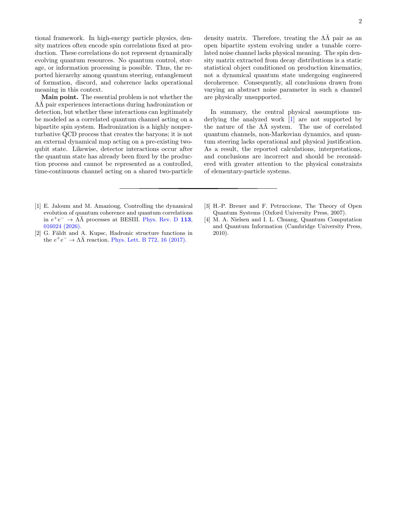
Fig 1. Low-resolution page preview, page 2
Summary. This paper critiques a recent study on quantum correlations in hyperon-antihyperon production, arguing that the use of open quantum system theory is physically unjustified. The author shows that because the particles do not share an environment and cannot be subjected to controlled measurements, the reported dynamical evolution and steering are conceptually flawed. The work emphasizes the need to distinguish between mathematical quantifiers and physically realizable quantum information protocols.
Why it may be interesting. This paper provides a critical cautionary tale for researchers applying open quantum system formalisms (like non-Markovianity and steering) to high-energy physics systems where the necessary environmental coupling and measurement control are absent.
Detailed structure
**Main problem.** The author critiques the physical validity of applying open quantum system frameworks, such as correlated quantum channels and non-Markovian dynamics, to the hyperon-antihyperon (Lambda-antiLambda) system.
**Main result.** The author demonstrates that the analyzed work is physically inconsistent because the produced particles are free, unstable, and do not interact with a shared environment, making the reported quantum correlations and steering operationally meaningless.
**Method.** The author uses a theoretical critique of the underlying physical assumptions, specifically addressing the lack of a shared bath, the absence of information backflow, and the impossibility of real-time measurement-induced state updates in relativistic particle decays.
**Model / system.** The system consists of a Lambda-antiLambda (Lambda-antiLambda) pair produced via the electron-positron annihilation process e+e- -> Lambda-antiLambda, treated as a bipartite spin system.
**Key observables.** spin correlations, quantum coherence, entanglement, and quantum steering
**Assumptions / limitations.** The author assumes that the particles are free, unstable, relativistic particles that do not interact with a common environment after production.
**Paper structure.** The paper is structured as a series of four remarks and a main point, each addressing a specific physical inconsistency regarding correlated channels, Markovianity, quantum steering, and the hierarchy of correlations.
Abstract
We critically examine recent claims [Phys. Rev. D 113, 016024 (2026)] regarding quantum coherence, steering, and non-Markovian dynamics in the hyperon-antihyperon system produced in the process $e^{+} e^{-} \rightarrow Λ\barΛ$. We argue that the theoretical framework employed in the analyzed work suffers from fundamental physical inconsistencies. In particular, the treatment of the $Λ\barΛ$ pair as a bipartite system evolving under correlated quantum channels is not physically justified, since the produced hyperons are free, unstable particles that do not interact with a common environment after production. Consequently, the application of open quantum system techniques, including Markovian and non-Markovian quantum channels, lacks a clear physical basis. Moreover, we show that the computation and interpretation of quantum steering for this system is operationally and conceptually meaningless, as no well-defined measurement-induced state update or controllable local measurement scenario exists for unstable relativistic particles. These issues call into question the physical relevance of the reported quantum correlations, their hierarchy, and their dynamical behavior. Our analysis highlights the necessity of carefully distinguishing between formal mathematical quantifiers of quantumness and physically realizable quantum information protocols in high-energy particle systems.
Authors: Julian B. Voits, Ulrich S. Schwarz Type: theory · Category: statistical mechanics · PDF:https://arxiv.org/pdf/2605.00135v1 Analysis basis: full PDF text, analyzed in chunks
Topic relevance:correlated / nonlocal dissipation2/5 · methods for driven-dissipative2/5 · non-equilibrium dynamics2/5
↔ Scroll figures horizontally
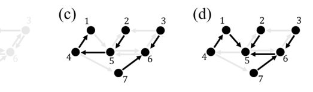
Fig 1. Figure 1. Illustration of relevant graph theoretic concepts. (a) An example of a directed graph G with N = 7 vertices. (b) A path in G from vertex 1 to vertex 7. (c) A spanning forest of G with roots 1 and 6. (d) A spanning tree of G with root 5.
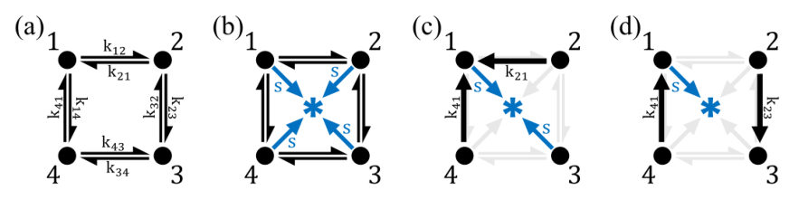
Fig 2. Figure 2. Illustration of the construction that allows to express the Laplace transform of the occupation probabilities in graph theoretic terms. (a) An example for a Markov network on four states represented as a weighted and directed graph G with the states as vertices, the transitions as directed edges with the transition rates as edge weights. (b) The augmented graph G∗is constructed by including an additional vertex ∗and edges with rate s leading from every other vertex to ∗. (c) A spanning tree of the augmented graph with root in ∗. (d) A spanning forest containing two trees with roots in 3 and ∗.
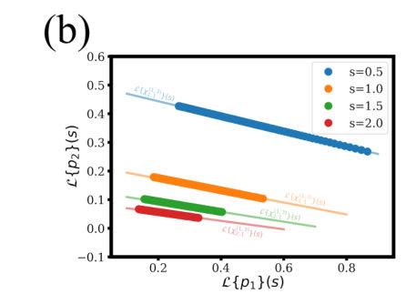
Fig 3. Figure 3. Illustration of the mutual linearity for an example network. (a) Network with four vertices, where the rate k13 is varied. (b) Affine relation (mutual linearity) between the Laplace transforms of the occupation probabilities L{p}(s)1 and L{p}(s)2 for different values of s. The parameters are k12 = 1, k21 = 0.4, k23 = 1.2, k32 = 0.5, k34 = 0.9, k43 = 0.6, k41 = 1.1, k14 = 0.3, k31 = 0.2 and k13 ∈[0, 5]. The solution is obtained from a numerical inversion of Eq. (16). The transparent lines show the analytical solution for the slope, L{χ(1,3) 2,1 }(s) = k32−k12 s+k21+k23 , obtained from the graph theoretic expression, Eq. (31).
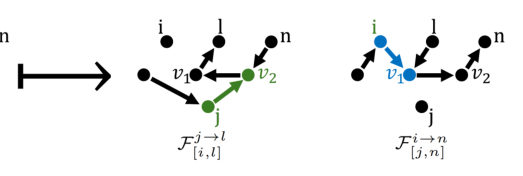
Fig 4. Figure 4. Illustration of the auxiliary map Hij nl which exchanges the outgoing edges of the vertices on the i →l-path in Fi→l [j,l] until it reaches the n-tree Fj→n [i,n] (blue path) with the corresponding edges in Fj→n [i,n] , and also
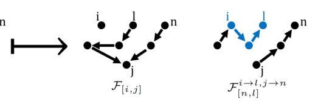
Fig 5. Figure 5. Illustration of the auxiliary map Aij nl which exchanges the edges on the i →l-path in Fi→l [j,l] with the
Summary. This paper provides a new graph-theoretic proof for the mutual linearity of transient probabilities and hitting time distributions in Markov networks. By using the all-minorable matrix-tree theorem, the authors derive explicit combinatorial formulas for how these distributions respond to changes in transition rates. The results bridge the gap between stationary and non-stationary dynamics and show that short-time responses are determined by graph geometry.
Why it may be interesting. This work provides fundamental mathematical constraints on the dynamics of stochastic networks, which is highly relevant for understanding the relaxation and response of open quantum systems and biochemical networks.
Detailed structure
**Main problem.** The paper seeks to establish a graph-theoretic derivation for the 'mutual linearity' property in Markov networks, extending it from the stationary regime to the non-stationary (transient) regime in Laplace space.
**Main result.** The authors prove that mutual linearity applies to both transient occupation probabilities and hitting time distributions, providing explicit combinatorial expressions for non-stationary response ratios and susceptibilities.
**Method.** The study employs the all-minors matrix-tree theorem, Laplace transforms, and combinatorial tools like spanning forests and trees on augmented graphs to derive the results.
**Model / system.** The system consists of irreducible, time-homogeneous Markov networks defined by a continuous-time stochastic process on a directed, edge-weighted graph where dynamics are governed by the Kolmogorov forward equation.
**Key observables.** Occupation probabilities, network currents, response ratios, susceptibility, and hitting time distributions.
**Important parameters / regimes.** Transition rates (k_ij), Laplace variable (s), stationary regime (long-time limit), and short-time asymptotics (governed by minimal path distances).
**Assumptions / limitations.** The Markov networks are assumed to be irreducible and time-homogeneous.
**Figures summary.** Figure 1 visualizes graph theoretic concepts like directed graphs and spanning forests; Figure 5 illustrates an auxiliary map for edge exchange; Figure 6 shows short-time scaling of response ratios in an example network.
**Paper structure.** The paper introduces the problem of mutual linearity, develops a graph-theoretic framework using the all-minors matrix-tree theorem, extends the derivation to the non-stationary regime in Laplace space, proves the extension to hitting time densities, and analyzes short-time and long-time limits.
Abstract
For irreducible, time-homogeneous Markov networks, mutual linearity has recently been established for both occupation probabilities and network currents in the stationary regime as well as in the non-stationary regime in Laplace space. The derivation of this property for the stationary distribution utilized the Markov-chain tree theorem, which also allows for an explicit combinatorial expression of the response ratios under variation of a single transition rate. The extension of this result was proven at the trajectory level by employing the Doob-Meyer decomposition. By employing the all-minors matrix-tree theorem, we show that this property also follows from a graph theoretic formulation and derive explicit combinatorial expressions for the non-stationary response ratios. The stationary result follows as the long-time limit and we also show that the small-time asymptotics are entirely determined by minimal path distances in the underlying graph. Finally we use the graph theoretic approach to prove that mutual linearity also extends to hitting time densities.
Authors: Lea Gassab, Betony Adams, Yashine H. Goolam Hossen, Onur Pusuluk, Iannis K. Kominis, Özgür E. Müstecaplıoğlu, Francesco Petruccione, Travis J. A. Craddock Type: theory · Category: other · PDF:https://arxiv.org/pdf/2605.00205v1 Analysis basis: full PDF text, analyzed in chunks
Topic relevance:correlated / nonlocal dissipation2/5 · non-equilibrium dynamics2/5 · spintronics-quantum-optics interface2/5
↔ Scroll figures horizontally
Fig 1. FIG. 1. Conceptual framework used throughout the review. Each topic is mapped across three directions: quantum in biology, quantum for biology, and biology for quantum. The framework evaluates the central claim, the quantum resource invoked, the supporting evidence, the main classical or engineering confounds, and the tests or benchmarks most likely to change confidence. These judgments are summarized through an evidence ladder ranging from established contributions to plausible but unresolved cases and more speculative proposals.
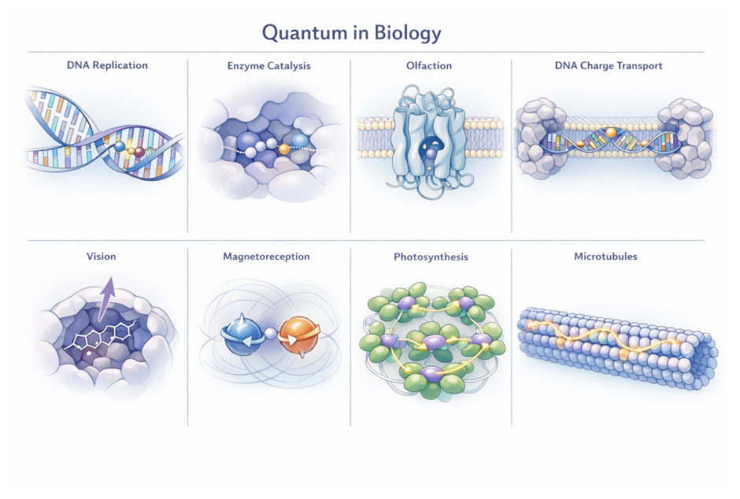
Fig 2. FIG. 2. Overview of selected key topic areas in quantum in biology. The panels schematically represent DNA replication and proton transfer, enzyme catalysis and hydrogen tunneling, olfaction and receptor-level vibrational or electron-transfer hypotheses, DNA charge transport through base-stacked pathways, vision through retinal photoisomerization in rhodopsin, radical-pair magnetoreception, excitonic dynamics in photosynthesis, and proposed photophysical or collective effects in microtubules. The figure is illustrative and does not imply that all topics have the same evidential status. Figure generated using ChatGPT, with scientific content reviewed by the authors.Fig 3. FIG. 3. Overview of representative directions in quantum for biology. The panels illustrate quantum simulation of molecular and spin-dynamical systems, quantum-assisted molecular design and drug discovery, quantum machine learning for bioinformatics, nitrogen-vacancy sensing, quantum-enhanced NMR and magnetic-resonance methods, and quantum imaging or spectroscopy. The figure summarizes tool classes discussed in the section; it does not imply established quantum advantage for each application. Figure generated using ChatGPT, with scientific content reviewed by the authors.Fig 4. FIG. 4. Overview of representative directions in biology for quantum. The panels schematically show DNA origami scaffolds, virus- templated materials, DNA-templated wiring, biohybrid excitonic or polaritonic platforms, fluorescent protein qubits, biomolecular or cellular quantum-biosensing concepts, bioinspired transport, and quantum or quantum-inspired neural-network architectures. These examples illustrate ways biological structures or principles may support quantum technologies, with evidential strength depending on device-level benchmarks, reproducibility, and comparison to non-biological alternatives. Figure generated using ChatGPT, with scientific content reviewed by the authors.
Summary. This review provides a structured framework to evaluate the evidence for quantum effects in biological processes and the potential for biological structures to advance quantum technology. It categorizes research into three directions: quantum in biology, quantum for biology, and biology for quantum. The paper highlights the need for decisive experiments to distinguish true quantum functionality from classical or semiclassical alternatives.
Why it may be interesting. It provides a high-level synthesis of open quantum system dynamics, specifically how environmental noise, dissipation, and vibronic coupling interact with biological structures, which is highly relevant to researchers in open quantum systems and quantum biology.
Detailed structure
**Main problem.** The paper seeks to map the intersection of quantum science and biology across three dimensions: quantum in biology, quantum for biology, and biology for quantum, specifically evaluating whether quantum resources are functionally necessary for biological processes.
**Main result.** The authors establish a structured evidence map and a qualitative 'evidence ladder' that categorizes biological phenomena from established quantum-chemical contributions (e.g., enzyme tunneling, radical-pair magnetoreception) to speculative proposals (e.g., microtubule quantum computing).
**Method.** The review employs a structured narrative evidence map using a five-criteria analytical framework: central claim, invoked quantum resource, strength of evidence, competing classical alternatives, and required decisive benchmarks.
**Model / system.** The paper covers a diverse range of biological and bio-inspired systems, including enzymatic hydrogen transfer, radical-pair spin chemistry in cryptochromes, photosynthetic excitonic dynamics, DNA replication, and biohybrid quantum platforms like DNA origami.
**Key observables.** Kinetic isotope effects (KIE), temperature dependence, hyperfine/Zeeman interactions, vibrational wavepackets, spin-dependent dynamics, and quantum yield.
**Important parameters / regimes.** Dephasing rates, vibronic coupling, tunneling probabilities, redox landscapes, and physiological conditions (temperature, pH, and noise).
**Assumptions / limitations.** The review assumes that distinguishing true quantum coherence from vibrational or ensemble effects is a primary challenge and that the utility of quantum tools must be measured against strong classical baselines.
**Figures summary.** Figure 1 presents a conceptual framework for evaluating the three review directions; Figure 2 provides an overview of key topic areas in quantum biology; Tables III and IV summarize the evidence, challenges, and benchmarks for quantum-for-biology and biology-for-quantum, respectively.
**Paper structure.** The paper is organized into a three-way mapping (Quantum in/for/from Biology), using an evidence ladder to categorize topics, followed by detailed analysis of specific biological mechanisms, technological utilities, and bio-inspired engineering, concluding with a navigation table of evidence and benchmarks.
Abstract
Quantum science and biology now intersect in three complementary directions: quantum in biology, quantum for biology, and biology for quantum. This review provides a structured narrative evidence map of that interface rather than an exhaustive catalogue or formal systematic review. For each topic, we ask what the mechanistic or technological claim is, which quantum resource is invoked, what the strongest experiments and models establish, which classical alternatives or engineering confounds remain competitive, and what decisive tests or benchmarks would most strongly change confidence. The most mature quantum-in-biology cases remain mechanistically constrained tunneling in some enzymatic hydrogen-transfer reactions and radical-pair spin chemistry as a viable framework for magnetoreception, whereas several higher-visibility topics remain suggestive but unresolved under physiological conditions. In quantum for biology, the central issue is whether quantum-enabled tools improve biological inference relative to strong classical baselines under realistic calibration, dose, throughput, and uncertainty constraints. In biology for quantum, the strongest claims arise when biomolecular structure or self-assembly measurably improves fabrication, integration, or robustness in quantum devices. Summary tables in the Appendix provide a compact cross-map view of the current evidence, major confounds, and the experiments or benchmarks most likely to discriminate between competing explanations.
Authors: Daniel Q. L. Nguyen, Maximilian Rimbach-Russ, Stefano Bosco Type: theory · Category: quantum information and computing · PDF:https://arxiv.org/pdf/2605.00611v1 Analysis basis: full PDF text, analyzed in chunks
Topic relevance:correlated / nonlocal dissipation2/5 · methods for driven-dissipative2/5 · non-equilibrium dynamics2/5
↔ Scroll figures horizontally
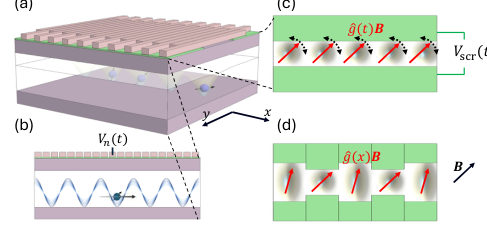
Fig 1. Figure 1. Breathing shuttling protocols. (a) Sketch of a conveyor-mode shuttling architecture. (b)-(c) Temporal breathing. Modulating the amplitude of the potential ap- plied to the top gates (b), or the screening gates (c), enables to modulate the confinement potential of the spin qubit dur- ing shuttling. (d) Spatial breathing. A periodic change in the design of the screening gates modulates of the confinement in space, leading to a time-dependent driving of the spin even at constant shuttling velocities.
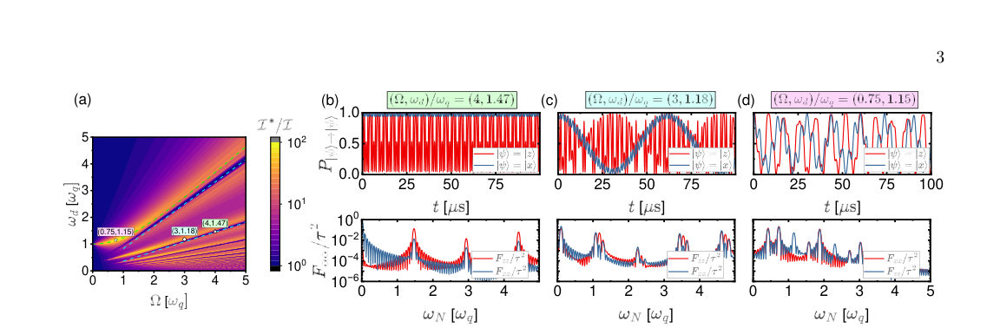
Fig 2. Figure 2. Noise decoupling of driven two-level system. (a) Ratio I∗/I of the infidelity without driving (I∗) (Ω= 0) to that under driving (I) as a function of ωd and Ω. Larger values in yellow indicate improved coherence. The green dashed line denotes the resonance condition including the Bloch-Siegert shift [Eq. (6)], while the cyan dashed lines indicate the first two solutions of Eq. (9). (b)-(d) Transition probabilities P|↑⟩→|↑⟩(t) and P|+⟩→|+⟩(t) together with the relevant filter functions Fxx and Fzz for (ωd, Ω) = (0.75, 1.15), (4, 1.47), and (3, 1.18), respectively. Panel (b) corresponds to the dark-branch condition, where the σx eigenstate is approximately eigenstate of the driven...
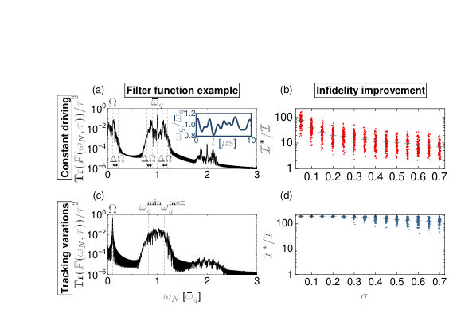
Fig 3. Figure 3. Driven two-level system with varying Lar- mor frequency. Filter functions of an exemplary Larmor frequency landscape using (a) constant driving with the mean Larmor frequency and (c) the tracking protocol defined in Eq. (11). The corresponding frequency landscape is shown in the inset of (a). Panels (b) and (d) show the correspond- ing average infidelity enhancement taking the ratio of infi- delity without driving (I∗) to that under driving (I) for dif- ferent variances σ in the Larmor frequency. For each chosen variance σ we plot the results from 100 sampled Larmor fre- quency landscapes for the constant-driving and tracking pro- tocols, respectively. The total evolution time is...
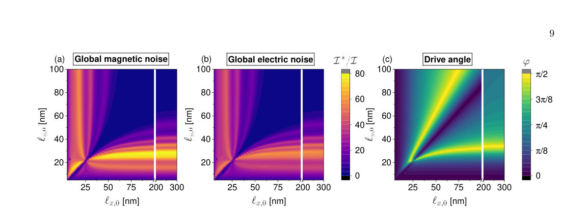
Fig 4. Figure 4. Temporal breathing shuttle with uniform driving. (a)-(b) Ratio I∗/I of the infidelity without time-dependent confinement modulation (I∗) to that under driving ωα(t) = ωα,0(1+γ sin ωdt) (I) at a fixed relative driving amplitude γ = 0.05. We consider a total evolution time 1 µs while sweeping different confinement lengths ℓα,0 = p
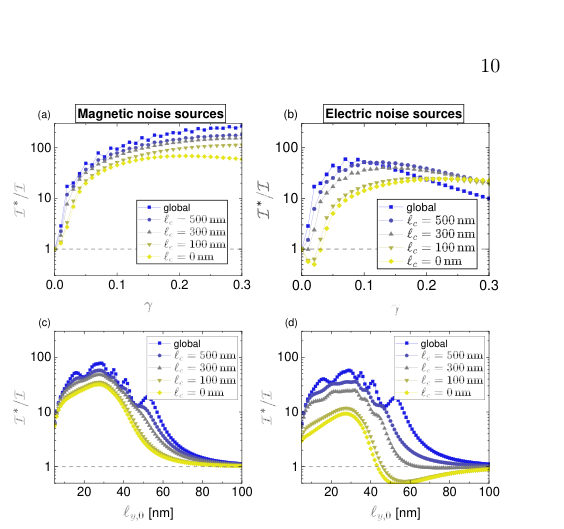
Fig 5. Figure 5. Temporal breathing shuttle with lateral driv- ing. Ratio I∗/I of the infidelity without time-dependent confinement modulation (I∗) to that under lateral driv- ing ωy(t) = ωy,0(1 + γ sin ωdt) (I). Panel (a) [(b)] shows the dependence on the relative driving amplitude γ, while panel (c) [(d)] shows the dependence on the confine- ment length ℓy,0 = p
Summary. This paper proposes using confinement modulation to implement continuous dynamical decoupling for spin qubits during transport. By periodically changing the qubit's potential, the researchers show they can suppress low-frequency noise in germanium hole-spin systems. This provides a practical method for creating noise-resilient quantum links in large-scale quantum computers.
Why it may be interesting. This paper is highly relevant to open quantum systems researchers as it explores the control of decoherence in a driven-dissipative system using continuous dynamical decoupling and examines the interplay between control protocols and the spatial/temporal scales of environmental noise.
Detailed structure
**Main problem.** The goal is to suppress spin qubit decoherence caused by low-frequency magnetic and electric noise during the long-range shuttling of qubits in scalable quantum architectures.
**Main result.** The study demonstrates that continuous dynamical decoupling (CDD) via confinement modulation (temporal or spatial breathing) can significantly enhance coherence by rotating the spin to mitigate noise, with the effectiveness depending on the noise correlation length.
**Method.** The authors use the filter function formalism, Schrieffer-Wolff transformations, and the Magnus expansion to analyze the susceptibility of the driven two-level system to various noise sources.
**Model / system.** The system consists of germanium (Ge) hole-spin qubits in a conveyor-mode shuttling architecture, modeled as a driven two-level system with strong spin-orbit interaction and a position-dependent g-tensor.
**Key observables.** Average gate infidelity (I), transition probabilities, filter functions (F), and the ratio of infidelity without driving to infidelity with driving (I*/I).
**Important parameters / regimes.** Rabi frequency (Omega), Larmor frequency (omega_q), driving frequency (omega_d), driving amplitude (gamma), shuttling velocity (v), and noise correlation length (l_c).
**Assumptions / limitations.** The analysis assumes the orbital adiabatic limit, the weak spin-orbit interaction limit, and that the driving frequency is much smaller than the orbital splitting; it also assumes 1/f noise power spectral density.
**Figures summary.** Figure 1 sketches the shuttling architecture and breathing protocols; Figure 2 shows heatmaps of infidelity ratios and examples of filter functions; Figure 6 illustrates the infidelity ratio as a function of shuttling velocity and driving amplitude.
**Paper structure.** The paper introduces the shuttling problem, defines the physical model of Ge hole-spin qubits, develops the effective Hamiltonian via unitary transformations, analyzes noise suppression using filter functions for both global and local noise, and concludes with numerical simulations of the protocols.
Abstract
Reliable long-range qubit shuttling is a powerful tool for scalable quantum computing architectures. We investigate strategies to improve the coherence of moving spin qubits by performing continuous dynamical decoupling by modulating their confinement potential. Specifically, we introduce temporal and spatial breathing shuttling protocols that leverage spin-orbit interactions in hole-spin systems to electrically drive the qubit while moving. This enables efficient dressed-state shuttling, where the spin is continuously rotated during transport, suppressing the effect of low-frequency noise. Using the filter function formalism, we identify driving regimes that efficiently mitigate both global and local magnetic and electric noise sources. We find that confinement-modulated shuttling can significantly enhance coherence during transport, while revealing distinct limitations depending on the correlation length of the noise. Applying our framework to germanium hole-spin qubits, we show that these protocols provide a practical route toward noise-resilient long-range coherent quantum links.
Authors: Huw Price Type: theory · Category: other · PDF:https://arxiv.org/pdf/2605.00406v1 Analysis basis: full PDF text, analyzed in chunks
Topic relevance:entanglement & information structure2/5 · quantum measurements2/5
↔ Scroll figures horizontally
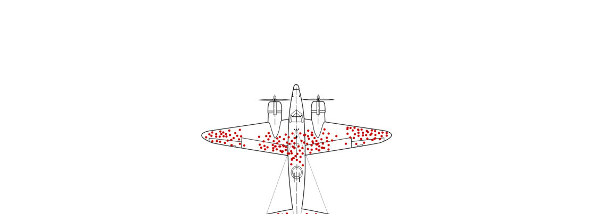
Fig 1. Figure 1: Survivorship bias.3 As we will explain, there are two ways to describe this conclusion. One is to say that the proposal avoids nonlocality, preserving locality without sacrificing realism. The other is to say that Bell nonlocality itself turns out to be a selection artefact. This is a terminological issue, depending on what we choose to mean by ‘nonlocality’ when the new option is in view. We will return to this question below (§4.1), referring to Bell’s own discussion of the term. Either way, the upshot is that Bell correlations are much less puzzling than they have seemed, in tension neither with relativity nor realism. We stress that ‘less puzzling’ does not imply ‘not puzzling...
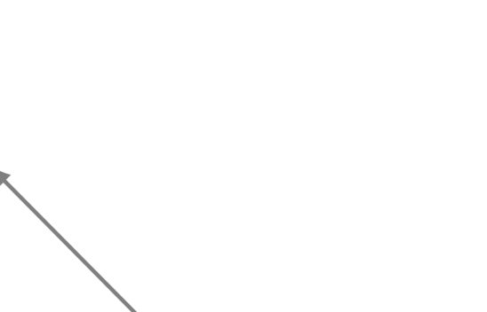
Fig 2. Figure 2: A collider
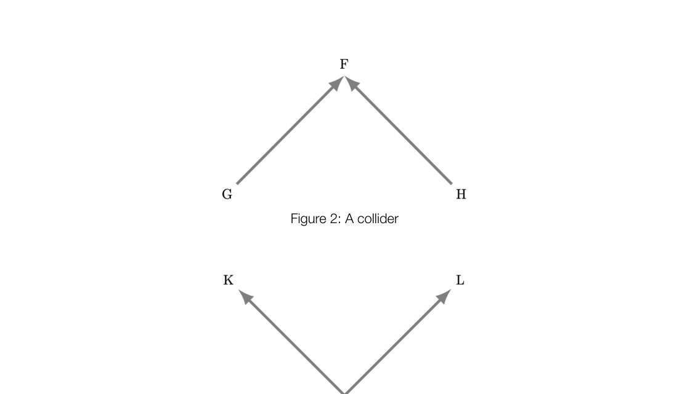
Fig 3. Figure 3: A common cause The second reason does apply in the familiar, causal world. A well-known property of common causes (see Figure 3) is that their effect on correlations is the opposite of a collider. The correlations they produce disappear if we condition on the common cause – if we select cases in which the common cause variable takes one particular value. The explanation is simple. If K co-varies with L because they both co-vary with a common cause J, then if we remove the variation of J, holding it fixed, we remove the co-variation between K and L. Here’s an example. Suppose that K and L are rare diseases of mice. Both diseases are genetic disorders, caused by different...
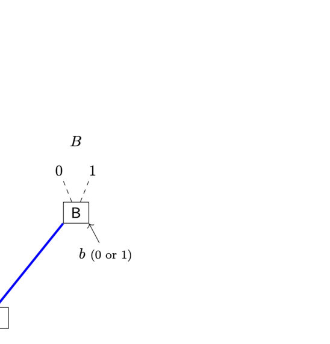
Fig 4. Figure 4: A two-particle Bell experiment
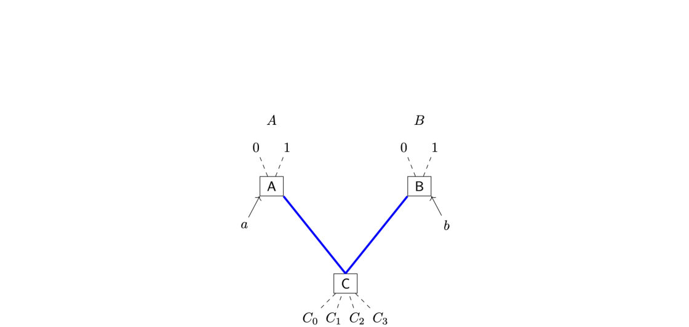
Fig 5. Figure 5: Bell experiment with four possible initial Bell states. Let’s make this classical toy model a little more sophisticated. The real Bell experiment we had in mind can be performed with any of the four so-called Bell states as the initial preparation. Let’s write these four states as C0, C1, C2, C3, where C0 is the singlet state. (See Figure 5.) For each of these states, there is a probability distribution P(A,B|a,b,Ci) giving the predicted joint probability of outcomes (A,B) given settings (a,b) and initial state Ci. Charlie can use these probabilities to sort results from Alice and Bob into four hoppers H0, H1, H2, H3, such that (i) no results are discarded and (ii) the frequencies...
Summary. This paper proposes that the apparent nonlocality in quantum mechanics is actually a statistical artifact caused by selection bias. By treating Bell correlations as 'correlator bias,' the author suggests that local realism and special relativity can be preserved without needing to invoke spooky action at a distance.
Why it may be interesting. not directly relevant
Detailed structure
**Main problem.** The paper addresses the tension between Bell correlations and the principles of local realism and special relativity, questioning if these correlations necessitate nonlocality.
**Main result.** The author proposes that Bell correlations are not evidence of fundamental nonlocality but are instead 'selection artefacts' or 'correlator bias' arising from conditioning on a specific variable.
**Method.** The author uses a statistical framework of selection bias (specifically collider bias) and directed acyclic graphs (DAGs) to re-interpret Bell's theorem.
**Model / system.** The paper analyzes standard Bell-type experiments, including V-shaped (entangled pair preparation) and W-shaped (entanglement swapping) geometries, using classical and quantum toy models of selection bias.
**Key observables.** Bell correlations (violations of Bell inequalities) and the factorizability of joint probabilities.
**Important parameters / regimes.** The distinction between a 'super-ensemble' (full population) and a 'sub-ensemble' (selected subset) defined by a Correlator.
**Assumptions / limitations.** The proposal does not provide a physical mechanism for the underlying correlations and relies on the assumption that a randomizer can model the unconstrained super-ensemble.
**Figures summary.** Figure 1 shows WWII bomber survivorship bias; Figures 2 and 3 show DAGs for colliders and common causes; Figure 4 shows a Bell experiment setup; Figure 5 shows Bell states; Figure 6 illustrates entanglement swapping (W-shaped) geometry.
**Paper structure.** The paper introduces selection bias, applies it to Bell's theorem via 'correlator bias,' develops classical and quantum toy models, extends the argument to entanglement swapping (W-shaped experiments), and discusses implications for time-symmetric causality.
Abstract
Selection artefacts are common in science. A method of selecting samples from a larger population may produce bias, in either direction. It may induce correlations between variables independent in the full population, or mask correlations between variables dependent in the full population. Here we propose a surprising application of these familiar ideas. We argue that they are relevant to puzzling correlations uncovered in quantum theory by John Stewart Bell (Bell 1964). In the light of Bell's work and subsequent experiments it is widely believed that the quantum world is 'nonlocal', in apparent tension with relativity. Many hold that the only alternative is to abandon 'realism', the view that there is an objective world independent of measurement. We propose instead that Bell correlations are selection artefacts, in tension neither with relativity nor realism.
Authors: Xin Du, Kumiko Tanaka-Ishii Type: both · Category: disordered systems and neural networks · PDF:https://arxiv.org/pdf/2605.00435v1 Analysis basis: full PDF text, analyzed in chunks
Topic relevance:non-equilibrium dynamics2/5 · scars & prethermalization2/5
↔ Scroll figures horizontally
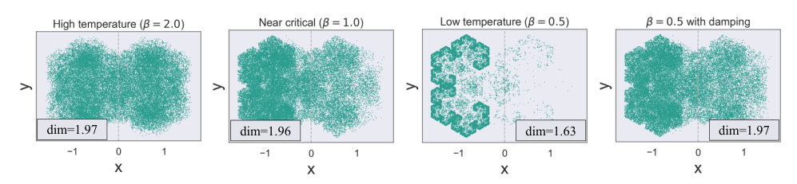
Fig 1. Figure 1. Trajectories of the state-dependent IFS in Eq. (13). We use ri = 0.6 (∀i), bi = [2gi, 0]⊤, and a rotation Oi with angle θi = −giπ/3. (a–c) Different inverse temperatures β: (a) β = 2.0, (b) β = 1.0, (c) β = 0.5. (d) Regulation implemented as weak damping (Eq. (3)) applied to the history-dependent variable mt.
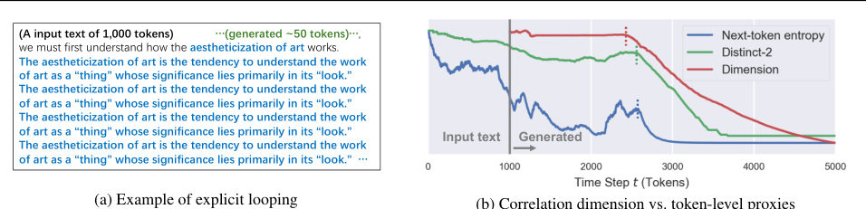
Fig 2. Figure 2. From explicit looping to geometric collapse. (a) An example of explicit mode collapse (looping) with Qwen3-4B-Base at temperature 0.5. (b) Along a single generation trajectory (starting at t = 1000), next-token entropy (blue) and Distinct-2 (green) provide token-level proxies of diversity, whereas correlation dimension (red) directly measures state-space accessibility; it drops sharply as the trajectory concentrates into a low-dimensional regime.
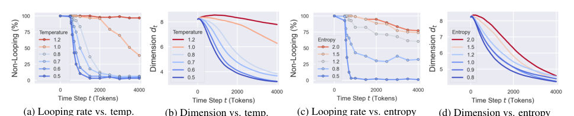
Fig 3. Figure 3. Correlation dimension tracks mode collapse across decoding conditions. As randomness is reduced (lower temperature or lower entropy target), explicit looping becomes more frequent, and correlation dimension decreases in tandem, indicating progressive concentration into low-dimensional regimes.
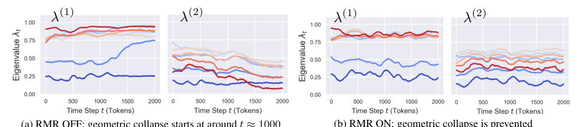
Fig 4. Figure 4. Evolution of the top-2 generalized eigenvalues in the value cache across Transformer layers (color-coded from blue to red), reporting the mean over attention heads. (a) Without RMR, geometric collapse begins around t ≈1000: the leading eigenvalue rises toward 1 while the second eigenvalue quickly drops toward 0, indicating a widening spectral gap and dominance by a single persistent mode. (b) With RMR, the leading eigenvalue in each layer is regulated below the threshold (λmin = 0.8), maintaining a stable spectrum and preventing collapse.
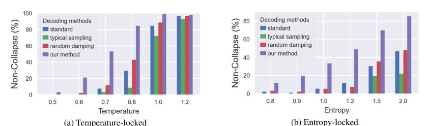
Fig 5. Figure 5. Non-collapse rates under controlled randomness. (a) Temperature-locked decoding and (b) entropy-locked decoding, comparing standard decoding, typical sampling, random regulation, and RMR. A completion is counted as non-collapse if its correlation dimension remains above 8 over 1,000 generated tokens of HEIDEGGER.
Summary. This paper reinterprets LLM mode collapse as a geometric collapse of internal representation trajectories into low-dimensional attractors. It introduces RMR, a method to suppress persistent directions in the Transformer cache, effectively preventing repetitive generation. The approach maintains high text quality while enabling stable generation at much lower entropy rates.
Why it may be interesting. The paper uses tools from dynamical systems and statistical mechanics, such as Iterated Function Systems, phase transitions, and fractal dimensions, to analyze the stability and ergodicity of a high-dimensional stochastic process.
Detailed structure
**Main problem.** Addressing mode collapse in Large Language Models (LLMs), where autoregressive generation enters repetitive, low-entropy loops or loses semantic diversity.
**Main result.** The proposed Reinforced Mode Regulation (RMR) significantly increases non-collapse rates in LLMs (e.g., from 8% to 56% at temperature 0.7) without degrading text quality, by preventing the geometric collapse of internal trajectories.
**Method.** A lightweight, online intervention called Reinforced Mode Regulation (RMR) that uses low-rank damping to attenuate dominant, self-reinforcing directions in the Transformer value cache identified via a generalized eigenvalue problem.
**Model / system.** The system is modeled as an autoregressive Transformer-based LLM (e.g., Qwen, Llama) where the generation process is viewed as a stochastic trajectory in a high-dimensional state space (the KV cache), specifically using an Iterated Function System (IFS) framework to represent the dynamics.
**Key observables.** Correlation dimension (fractal dimension of the trajectory), next-token entropy, Distinct-n, and generalized eigenvalues of the value-cache subspace.
**Important parameters / regimes.** Temperature (T), damping strength (eta), eigenvalue threshold (lambda_min = 0.8), and entropy-locked/temperature-locked decoding regimes.
**Assumptions / limitations.** The method assumes access to the internal Transformer KV cache and relies on the approximation that the high-dimensional vocabulary can be binned for efficient computation.
**Figures summary.** Figure 1 visualizes trajectory transitions in an IFS; Figure 2 shows explicit looping examples; Figure 4 shows the widening spectral gap signaling collapse; Figure 6 illustrates non-looping degeneration (template/conceptual looping); Figure 8 and 9 show the stability of correlation dimension under RMR.
**Paper structure.** The paper introduces the problem of mode collapse, proposes a dynamical-systems reinterpretation as geometric collapse, presents the RMR method and its efficient implementation, validates the method using correlation dimension as a diagnostic, and demonstrates performance gains across various LLMs and temperatures.
Abstract
Mode collapse is a persistent challenge in generative modeling and appears in autoregressive text generation as behaviors ranging from explicit looping to gradual loss of diversity and premature trajectory convergence. We take a dynamical-systems view and reinterpret mode collapse as reduced state-space accessibility caused by *geometric collapse*: during generation, the model's internal trajectory becomes confined to a low-dimensional region of its representation space. This implies mode collapse is not purely a token-level phenomenon and cannot be reliably solved by symbolic constraints or probability-only decoding heuristics. Guided by this perspective, we propose *Reinforced Mode Regulation* (RMR), a lightweight, online state-space intervention that regulates dominant self-reinforcing directions in the Transformer value cache (implemented as low-rank damping). Across multiple large language models, RMR substantially reduces mode collapse and enables stable, high-quality generation at extremely low entropy rates (down to 0.8 nats/step), whereas standard decoding typically collapses near 2.0 nats/step.
Authors: Arend-Jan Quist, Marc Farreras Bartra, Alexis de Colnet, John van de Wetering, Alfons Laarman Type: theory · Category: numerical methods · PDF:https://arxiv.org/pdf/2605.00106v1 Analysis basis: full PDF text, analyzed in chunks
Topic relevance:entanglement & information structure2/5 · methods for driven-dissipative2/5
↔ Scroll figures horizontally
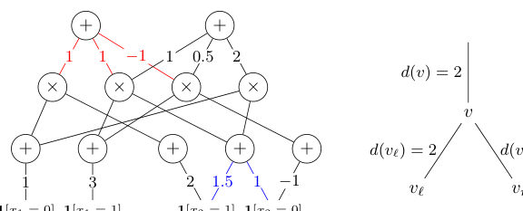
Fig 1. Figure 1: Example of a structured-decomposable circuit (left) and its corresponding tree tensor network (right). The matrices of the tensors correspond to adjacency matrices between the layers of the circuit.
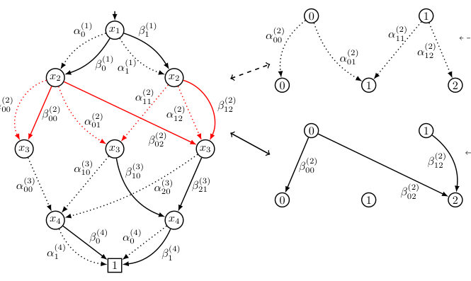
Fig 2. Figure 2: A non-deterministic edge-valued decision diagram (nd-EVDD) and its equivalence to a tensor train (TT). A pseudo-Boolean function f(x1, . . . , x4) is encoded as an nd-EVDD, which is structurally equivalent to a TT representation. The red edges highlight the bipartite subgraph between levels 2 and 3 of the diagram, whose adjacency matrix directly corresponds to one of the tensors in the TT. Dashed and black double arrows indicate how this bipartite graph decomposes into two subgraphs: one for low edges and one for high edges, encoding the matrices A(2) 0 and A(2) 1 , respectively, each of dimension 2 × 3. In this construction, nodes at the upper level represent matrix rows, nodes...
Summary. This paper bridges the gap between tensor networks and knowledge compilation by proving they are mathematically equivalent representations of the same class of functions. This allows physicists to use advanced algorithmic tools from formal verification, such as variable reordering and canonical forms, to optimize tensor network computations.
Why it may be interesting. not directly relevant
Detailed structure
**Main problem.** Establishing formal mathematical equivalences between the Tensor Network community (used in physics/ML) and the Tractable Circuits community (used in formal verification) to enable the transfer of algorithms and structural properties.
**Main result.** The paper proves that Matrix Product States (Tensor Trains) are equivalent to non-deterministic edge-valued decision diagrams, and Tree Tensor Networks correspond to structured-decomposable circuits, allowing for bidirectional transfer of complexity results and heuristics.
**Method.** The authors use the language of semi-rings to unify weights and develop constructive, polynomial-time transformation procedures between the two frameworks.
**Model / system.** The paper focuses on mathematical data structures for representing pseudo-Boolean functions, specifically Matrix Product States (MPS), Tree Tensor Networks (TTN), and Edge-Valued Decision Diagrams (EVDD).
**Assumptions / limitations.** The transformation from EVDD to TT assumes EVDDs are complete (all variables are read on every path), though this can be enforced efficiently.
**Figures summary.** Figure 1 illustrates the structural mapping between a structured-decomposable circuit and a tree tensor network; Figure 2 demonstrates the functional equivalence between an nd-EVDD and a Tensor Train.
**Paper structure.** The paper introduces the problem of isolated frameworks, defines the mathematical models for both sides using semi-rings, proves specific structural equivalences (TT to EVDD and TTN to circuits), provides complexity analysis for transformations, and discusses the implications for cross-domain utility like variable ordering and lower bounds.
Abstract
Tensor networks and circuits are widely used data structures to represent pseudo-Boolean functions. These two formalisms have been studied primarily in separate communities, and this paper aims to establish equivalences between them. We show that some classes of tensor networks that are appealing in practice correspond to classes of circuits with specific properties that have been studied in knowledge compilation as \emph{tractable circuits}. In particular, we prove that matrix product states (tensor trains) coincide with nondeterministic edge-valued decision diagrams and that tree tensor networks exactly correspond to structured-decomposable circuits. These correspondences enable direct transfer of structural and algorithmic results; for example, canonicity and tractability guarantees known for circuits yield analogous guarantees for the associated tensor networks, and vice versa.
Authors: Saeed Haddadi Type: theory · Category: quantum information and computing · PDF:https://arxiv.org/pdf/2605.00129v1 Analysis basis: full PDF text, analyzed in chunks
Topic relevance:entanglement & information structure2/5
↔ Scroll figures horizontally
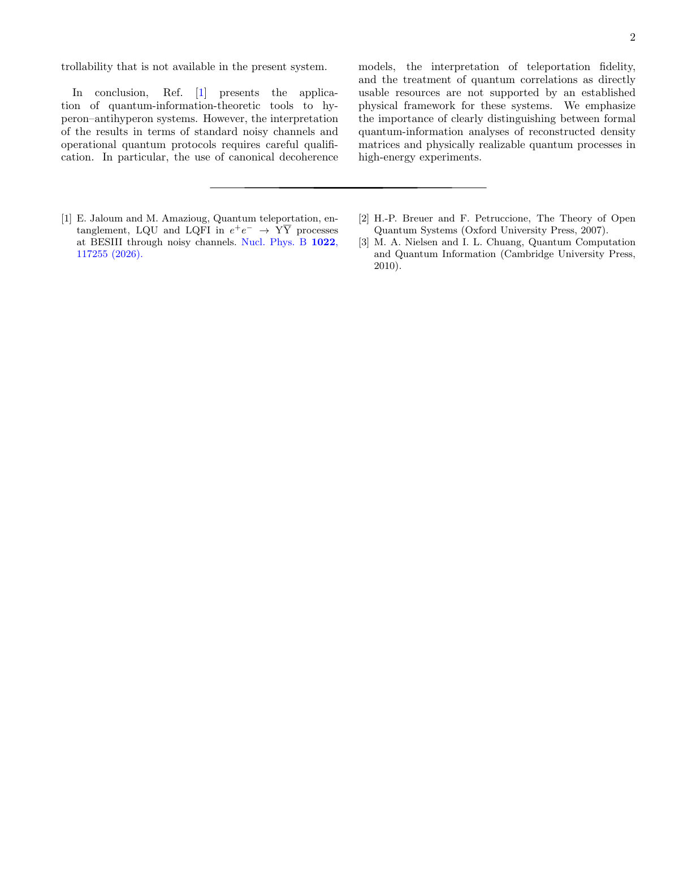
Fig 1. Low-resolution page preview, page 2
Summary. This paper provides a critique of applying quantum information theory to high-energy physics, arguing that metrics like teleportation fidelity and decoherence models lack physical meaning when applied to hyperon pairs. The author contends that these quantities should be viewed as descriptions of static production correlations rather than dynamical quantum resources or environmental effects.
Why it may be interesting. not directly relevant
Detailed structure
**Main problem.** The paper critiques the physical validity of applying standard quantum information metrics and decoherence models to high-energy particle production processes.
**Main result.** The author argues that using noise channels and teleportation fidelity to describe hyperon-antihyperon pairs is physically unjustified because there is no identifiable environment-system interaction and the particles cannot be used for operational quantum protocols.
**Method.** A critical theoretical analysis of the physical correspondence between standard CPTP noise models (like amplitude damping) and the dynamics of relativistic, unstable particles produced in scattering events.
**Model / system.** Hyperon-antihyperon (Y anti-Y) pairs produced via e+ e- annihilation at the BESIII experiment, characterized by a reconstructed spin density matrix.
**Key observables.** Logarithmic negativity, Local Quantum Uncertainty (LQU), Local Quantum Fisher Information (LQFI), and teleportation fidelity.
**Important parameters / regimes.** Abstract noise parameters used in the criticized study to model decoherence.
**Assumptions / limitations.** The author assumes that the validity of quantum information measures depends on the existence of a physical environment and the ability to perform operational control, which is absent in this high-energy system.
**Paper structure.** The paper presents a critique of a recent study by first identifying the mismatch between standard decoherence models and the physics of free-propagating unstable particles, then arguing against the operational interpretation of teleportation fidelity, and finally proposing a re-interpretation of information metrics as static production correlations.
Abstract
We provide a critical assessment of a recent study applying quantum information concepts, including noisy channels and teleportation fidelity, to hyperon-antihyperon pairs produced in $e^{+}e^{-} \to Y\bar Y$ reactions at BESIII. While the spin density matrix reconstructed from experimental data provides a physically meaningful description of production correlations, we argue that its subsequent interpretation in terms of standard decoherence models-such as amplitude damping, phase damping, and phase flip-lacks a clear physical correspondence for these systems. The produced particles emerge from a single scattering event and propagate as free, unstable relativistic states, without a well-defined system-environment interaction acting on their spin degrees of freedom. As a result, the variation of quantum correlations with an abstract noise parameter does not describe a genuine physical evolution. We further contend that the reported teleportation fidelity should not be interpreted as evidence for operational quantum communication, since hyperon states cannot be prepared, controlled, or measured in a way that would enable a realizable teleportation protocol. More generally, quantities such as logarithmic negativity, local quantum uncertainty, and local quantum Fisher information primarily characterize static production correlations rather than directly usable quantum resources. Our analysis highlights the importance of distinguishing between formal quantum-information measures and their physical interpretation in high-energy particle systems.
Authors: João C. Inácio, J. Schwab, G. Rakhmanova, S. Safari, V. Zambra, H. Nasir, S. Paschen, K. A. Modic, Fakher F. Assaad, Toshihiro Sato Type: both · Category: strongly correlated electrons · PDF:https://arxiv.org/pdf/2605.00568v1 Analysis basis: full PDF text, analyzed in chunks
Topic relevance:spintronics-quantum-optics interface2/5
↔ Scroll figures horizontally
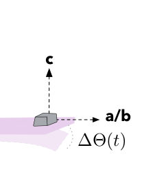
Fig 1. Fig. 1 Sketch of the cantilever setup for magnetotropic measurements. The cantilever oscillates around the axis e, and the magnetic field B is applied perpendicular to this axis.
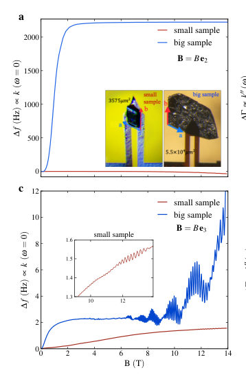
Fig 2. Fig. 2 Magnetic-field dependence of the magnetotropic susceptibility of the clean metal for in-plane and out-of-plane field orientations. Panels (a) and (b) show the shift in the cantilever resonance frequency, ∆f ∝k′(ω = 0), and the damping of the cantilever oscillations, ∆Γ = k′′(ω), for the in-plane configuration, B = B e2. Panels (c) and (d) show the corresponding response for the out- of-plane configuration, B = B e3. The inset in panel (c) highlights quantum oscillations in the small-sample signal. The panels (b) and (d) include schematic illustrations of the corresponding field orientation. Data for the big and small samples are compared in each panel. All data are shown at T = 1.5...
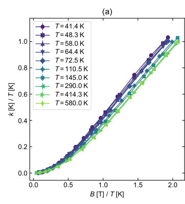
Fig 3. Fig. 3 Static magnetotropic susceptibility of the α-RuCl3 model for two parameter sets. Panel (a) shows the data from Ref. [4] for (J1, J3, K1, Γ1, Γ′ 1) = (−5.8, 5.8, −58, 29, 0) K, and panel (b) shows the results for the parameter set proposed in Ref. [28], (J1, J3, K1, Γ1, Γ′ 1) = (−0.35, 0.34, −2.8, 2.4, 0) meV ≈(−4.1, 3.9, −32.5, 27.9, 0) K. Here (ga, gb, gc) = (2.3, 2.3, 1.3).
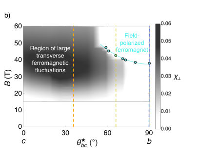
Fig 4. Fig. 6 Transverse ferromagnetic fluctuations in UTe2. (a) Amplitude of the pickup voltage of the cantilever during magnetotropic susceptibility measurements of UTe2 at 4 K, with the magnetic field applied at different angles in the bc plane, taking 0◦for B ∥c. (b) Phase diagram of the transverse susceptibility of UTe2 in the bc plane, obtained using the same technique, data are taken from Ref. [5]. The gray region indicates where transverse ferromagnetic fluctuations dominate, while the cyan line and dots correspond to the metamagnetic transition. Colored dashed lines indicate the sample angles shown in panel (a), with their corresponding colors. As the field is oriented toward the c axis,...
Summary. This paper introduces the dynamical magnetotropic susceptibility as a novel experimental probe for ultra-low-frequency fluctuations in quantum materials. It demonstrates how this probe can uniquely identify Kitaev physics and study charge fluctuations in metals. The work combines analytical derivation with advanced machine-learning-enhanced Monte Carlo simulations.
Why it may be interesting. not directly relevant
Detailed structure
**Main problem.** Developing a theoretical and numerical framework to use dynamical magnetotropic susceptibility as a new probe for the low-energy, uniform (q=0) spin and charge fluctuations in Kitaev materials and other correlated systems.
**Main result.** The study demonstrates that the magnetotropic susceptibility can identify Kitaev exchange dominance via a specific scaling law (k(0)/T = f(B/T)) and can distinguish between different metallic states and spin-orbit coupling effects.
**Method.** The authors use linear response theory to derive the susceptibility and employ auxiliary-field quantum Monte Carlo (AFQMC) with machine-learning-based optimization to mitigate the sign problem.
**Model / system.** The study focuses on Kitaev materials like alpha-RuCl3, insulating spin systems, and 2D metallic systems (e.g., PdCoO2), using a generic correlated-electron Hamiltonian that includes spin and charge degrees of freedom.
**Key observables.** Dynamical magnetotropic susceptibility k(omega), specifically its real part (frequency shift) and imaginary part (damping/energy absorption).
**Important parameters / regimes.** Magnetic field (B), temperature (T), magnetic anisotropy, and exchange couplings (Kitaev, Heisenberg, and Gamma terms).
**Assumptions / limitations.** The numerical approach is limited by the fermion sign problem at very low temperatures; the study assumes the weak-field limit for certain metallic models.
**Figures summary.** Figure 1 shows the experimental cantilever setup; Figure 3 compares static susceptibility scaling for different parameter sets; Figure 4 shows the dynamical spectrum k''(omega); Figure 6 illustrates cantilever voltage suppression and a phase diagram in UTe2; Figure 7 and 8 show correlation ratios and spin susceptibility for the XXZ model.
**Paper structure.** The paper introduces the magnetotropic susceptibility, derives its properties via linear response theory, applies it to insulating spin systems and metallic systems, performs numerical simulations on Kitaev models using ML-optimized AFQMC, and discusses broader applications to quantum criticality.
Abstract
The magnetotropic susceptibility $k(ω)$ probes ultra-low-frequency uniform fluctuations. For a crystal mounted on an oscillating cantilever in a magnetic field, it is defined as the ratio of torque to angular-displacement amplitude. Its real and imaginary parts determine the oscillation-frequency shift and crystal-induced damping. It is a low-energy probe of uniform $q=0$ spin and charge degrees of freedom. We demonstrate this by deriving $k(ω)$ within linear response theory for a generic correlated-electron Hamiltonian with charge and spin degrees of freedom. Although it covers metallic and insulating magnets, correlated paramagnets, and exotic quantum critical points, we focus on limiting cases. For insulating spin systems $k(0)$ is sensitive to magnetic anisotropy whereas its finite-frequency imaginary part probes uniform dynamical spin susceptibility even in spin-symmetric models. For metallic systems we identify when eddy currents cause low-frequency damping. Our numerical results focus on Kitaev-material magnetotropic response. Using auxiliary-field quantum Monte Carlo with machine-learning-based sign-problem optimization we compute $k(ω)$ for several models proposed for $α$-RuCl$_3$. The observed low-temperature scaling of $k(0)/T$ with $B/T$ results from dominant Kitaev couplings: parameter sets without dominant Kitaev coupling do not exhibit this scaling. It remains robust upon inclusion of optical phonons. Beyond the static response, $k''(ω)$ for the $α$-RuCl$_3$ parameter set reproducing the experimental $k(0)$ data shows local-moment features at high and low $T$, with a single peak at the Larmor frequency. Beyond Kitaev systems we highlight broader applications. Probing ultra-low-energy uniform charge fluctuations is pertinent to Kondo destruction quantum criticality, of broad interest in strange metallicity and unconventional superconductivity.
Authors: Ibrar, Mahammad Ahmed Hussain, Ayan Khan Type: theory · Category: quantum gases · PDF:https://arxiv.org/pdf/2605.00546v1 Analysis basis: full PDF text, analyzed in chunks
Topic relevance:analog quantum simulation2/5
↔ Scroll figures horizontally
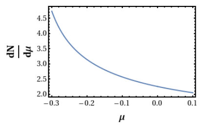
Fig 1. FIG. 1. (Color Online) Variation of dN/dµ with chemical po- tential which clearly shows that dN/dµ > 0 suggesting stable solution.
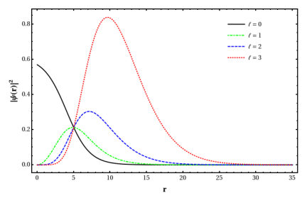
Fig 2. FIG. 2. (Color Online) The variation of the axial density for different topological charge is depicted. Here we have used N = 50, l = 0, 1, 2, 3, µ = −0.3, r0 = 5.
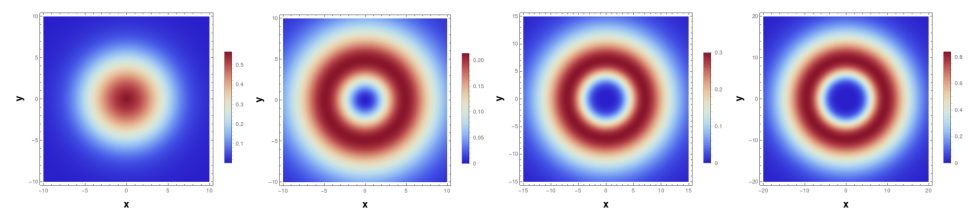
Fig 3. FIG. 3. (Color Online) Vortex generation for different topological charges. The left top corresponds to l = 0, vortex described in the right top is for l = 1 while the vortices in the lower panel is descibed for l = 2 and l = 3 (from left to right). Here, N = 50, µ = −0.3, r0 = 5
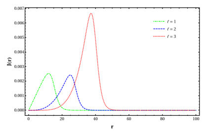
Fig 4. FIG. 4. Variation of current density for different topological charges. Here, N = 50, l = 1, 2, 3, µ = −0.3, r0 = 5.
Summary. This paper presents a new exact analytical solution for vortices in a 2D Bose gas including Lee-Huang-Yang corrections. It demonstrates that these vortex solutions are stable and describes how their structure and current density scale with topological charge. This result serves as a reliable theoretical benchmark for studying low-dimensional quantum fluids.
Why it may be interesting. It provides a rare exact analytical benchmark for 2D quantum fluids with beyond-mean-field effects, which is crucial for interpreting experimental observations of BKT transitions and stabilized quantum droplets.
Detailed structure
**Main problem.** The lack of exact analytical solutions for vortex structures in two-dimensional quantum gases when including Lee-Huang-Yang (LHY) beyond-mean-field corrections.
**Main result.** The derivation of an exact analytical vortex solution that provides a clear framework for understanding vortex structures, stability, and energy in 2D quantum fluids.
**Method.** The authors use an ansatz for a low-energy angular momentum eigenstate and apply the Lambert W function to solve the resulting transcendental equations, alongside the Newton-Mercator series expansion.
**Model / system.** A two-dimensional Bose liquid or ultra-cold atomic gas (specifically binary BECs) described by a nonlinear Schrödinger equation featuring a logarithmic nonlinearity arising from LHY corrections.
**Key observables.** Vortex core size, vortex energy, circulating current density, and particle number stability (dN/dmu).
**Important parameters / regimes.** Topological charge (l), chemical potential (mu), scale factor (alpha), and the LHY correction term.
**Assumptions / limitations.** The solution assumes a weak beyond-mean-field interaction to ensure series convergence and restricts the radial dependence of the beta/gamma ratio to a characteristic scale to maintain analytical consistency.
**Figures summary.** Figure 1 shows the stability of the solution via dN/dmu; Figure 2 shows radial density profiles for different topological charges; Figure 3 shows the evolution of the vortex core in the x-y plane; Figure 4 illustrates current density growth with increasing topological charge.
**Paper structure.** The paper introduces the problem of LHY corrections in 2D, presents a mathematical ansatz and derivation using the Lambert W function, performs stability analysis via the Vakhitov-Kolokolov criterion, and concludes with a discussion of physical implications and limitations.
Abstract
In this investigation, we provide an exact analytical vortex solution for a Bose liquid in two dimensions with beyond mean-field correction (BMF). Analytical solutions in two-dimensional systems with BMF corrections are rarely found in the literature. The present result provides a clear framework for understanding vortex structures in low-dimensional quantum fluids and serves as a reliable benchmark for future theoretical and experimental studies.
Authors: Anthony Gatti, Anoosha Fayyaz, Prashant Krishnamurthy, Kaushik P. Seshadreesan, Amy Babay Type: theory · Category: quantum information and computing · PDF:https://arxiv.org/pdf/2605.00246v1 Analysis basis: full PDF text, analyzed in chunks
Topic relevance:entanglement & information structure2/5
↔ Scroll figures horizontally
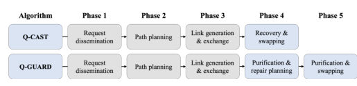
Fig 1. Fig. 1: Q-CAST vs. Q-GUARD routing pipelines. Phases 1–3 are shared. Q-GUARD diverges in Phase 4, adding fidelity- aware recovery planning with per-hop purification targets and an EXG-based segment selection metric. Phase 5 executes purification, swapping, and fidelity qualification.
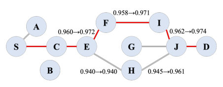
Fig 2. Fig. 2: Illustrative example of Q-GUARD recovery (Fth = 0.8, L = 5 hops).
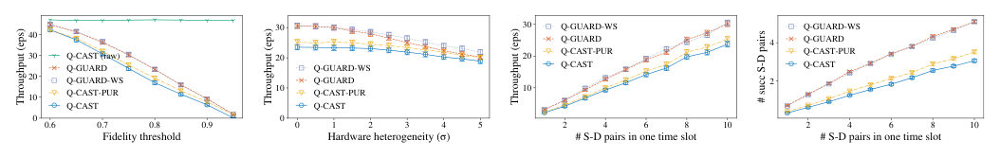
Fig 3. Fig. 3: Performance across operating conditions (a) Qualified throughput vs. fidelity threshold. Q-CAST’s raw throughput (green) is independent of Fth. (b) Qualified throughput vs. hardware heterogeneity ση. (c) Qualified throughput vs. number of offered S–D pairs. (d) Qualified S–D pairs served vs. number of offered S–D pairs.
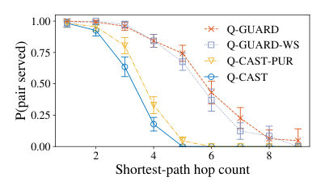
Fig 4. Fig. 4: Probability that an S–D pair receives at least one qualified ebit vs. shortest-path hop count (|V |=100, m=1, Fth=0.75).
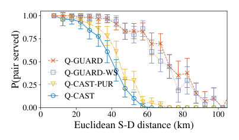
Fig 5. Fig. 5: Probability that an S–D pair receives at least one qualified ebit vs. Euclidean S–D distance (|V |=100, m=1, Fth=0.75).
Summary. The paper introduces Q-GUARD, a distributed routing algorithm for quantum networks that ensures end-to-end entanglement meets specific fidelity requirements. By using local link-state information and adaptive purification planning, it significantly improves the success rate and service range of quantum communication compared to traditional throughput-only methods.
Why it may be interesting. not directly relevant
Detailed structure
**Main problem.** Existing quantum network routing algorithms either ignore fidelity or require centralized global knowledge, leading to high latency and decoherence. There is a need for a distributed, fidelity-aware routing protocol that ensures end-to-end entanglement meets specific thresholds.
**Main result.** The Q-GUARD algorithm increases the qualified success rate from under 20% to over 85% on 4-hop paths and nearly doubles the effective service radius in Euclidean distance compared to throughput-only baselines.
**Method.** The authors propose Q-GUARD, an online distributed algorithm using a k-hop local link-state model, a Werner-state equal-split rule for fidelity target allocation, and an Expected Goodput (EXG) metric for path segment selection.
**Model / system.** A quantum network model consisting of nodes and links capable of entanglement generation, BBPSSW purification, and entanglement swapping, modeled using Werner states and a time-slotted, decentralized k-hop topology.
**Key observables.** Qualified throughput (eps), qualified success rate, service radius (Euclidean distance), and expected goodput (EXG).
**Important parameters / regimes.** Fidelity threshold (Fth), k-hop communication radius, path width (W), hardware heterogeneity (sigma_eta), and purification rounds (Rmax).
**Assumptions / limitations.** Assumes the BBPSSW purification protocol, Werner-state noise model, and a time-slotted operation with limited k-hop local information exchange.
**Figures summary.** Figure 1 compares the routing pipeline of Q-CAST vs Q-GUARD; Figure 2 shows a path detour example; Figure 3 shows performance metrics including qualified throughput vs fidelity threshold, throughput vs hardware heterogeneity, and throughput vs offered load.
**Paper structure.** The paper introduces the problem of fidelity-aware routing, presents the Q-GUARD and Q-GUARD-WS algorithms, details the physical model and metrics (EXG), evaluates performance via large-scale simulations on synthetic topologies, and analyzes computational complexity.
Abstract
Many quantum-network applications require end-to-end Bell pairs whose fidelity exceeds a request-specific threshold, but existing entanglement routing algorithms either optimize only throughput without regard for fidelity or enforce fidelity guarantees using centralized controllers with global link-state knowledge. We present Q-GUARD, an online entanglement routing algorithm that enforces per-request fidelity thresholds within a distributed protocol model in which nodes exchange link-state information only with their $k$-hop neighbors. After link outcomes are realized in each slot, Q-GUARD builds per-link purification cost tables from realized Bell pairs, allocates per-hop fidelity targets using a Werner-state equal-split rule, and selects between candidate path segments using a segment-local expected-goodput (EXG) metric that jointly accounts for swap success, purification overhead, and resource availability. We also introduce Q-GUARD-WS, an extension that exploits per-link hardware quality estimates to allocate purification effort non-uniformly across hops. On synthetic 100-node topologies with heterogeneous link fidelity and stochastic BBPSSW purification, Q-GUARD raises the qualified success rate from under 20\% to over 85\% on 4-hop paths and nearly doubles the qualified service radius in Euclidean distance relative to throughput-only and naive-purification baselines, while Q-GUARD-WS provides additional throughput gains under high hardware heterogeneity.
Authors: Ryuji Higashinaka, Takuma Iwami, Kohsuke Saitou, Takashi U. Ito, Chihiro Tabata, Koji Kaneko, Takashi Ohhara, Ryoji Kiyanagi, Akiko Nakao, Jumpei G. Nakamura, Wataru Higemoto, Akihiro Koda, Shinsaku Kambe, Yuji Aoki, Tatsuma D. Matsuda Type: experiment · Category: strongly correlated electrons · PDF:https://arxiv.org/pdf/2605.00540v1 Analysis basis: full PDF text, analyzed in chunks
Topic relevance:Frenkel-Kontorova2/5
↔ Scroll figures horizontally
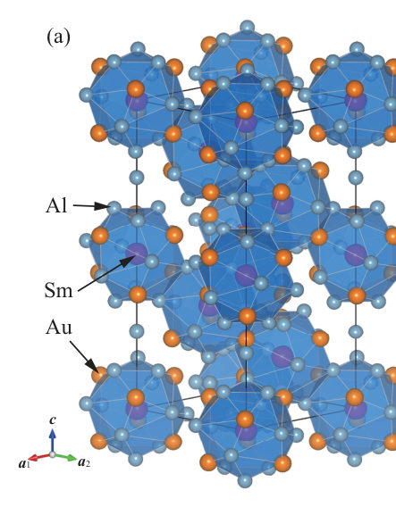
Fig 1. Fig. 1.
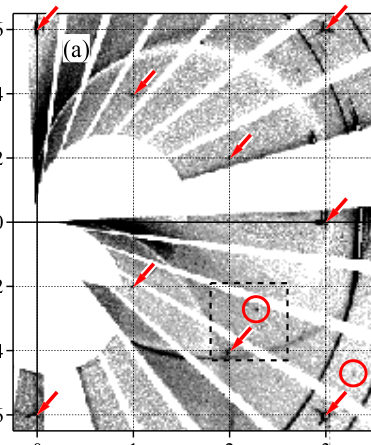
Fig 2. Fig. 2.
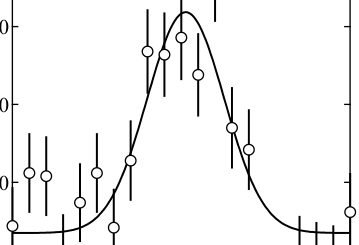
Fig 3. Fig. 3.
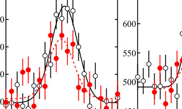
Fig 4. Fig. 4.
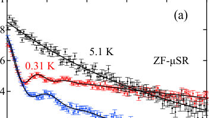
Fig 5. Fig. 5.
Summary. This paper demonstrates that the magnetic order in SmAu3Al7 is a spatially homogeneous incommensurate state rather than a partially disordered one. It shows that the magnetic structure remains stable through the secondary transition at 0.9 K. The study also links the incommensurate order to an enhanced low-temperature electronic specific heat, potentially due to Kondo screening.
Why it may be interesting. not directly relevant
Detailed structure
**Main problem.** The study aims to elucidate the nature of the incommensurate magnetic ordered state in SmAu3Al7 and determine if the transition at T* = 0.9 K involves a change in magnetic structure or a partially disordered state.
**Main result.** The researchers confirmed a spatially homogeneous incommensurate magnetic order that remains structurally unchanged across the T* transition, ruling out previous proposals of a partially disordered state.
**Method.** The study employs neutron scattering (TOF and triple-axis spectrometry) and muon spin rotation (muSR) to probe magnetic structures and local fields, alongside magnetometry and specific heat measurements.
**Model / system.** The physical system is SmAu3Al7, a single-crystal Sm-based strongly correlated electron system with an ScRh3Si7-type structure where Sm ions are in cages.
**Key observables.** Incommensurate propagation vector q, magnetic Bragg peak intensity, spontaneous internal magnetic fields (Bmax), magnetic susceptibility, and electronic specific heat coefficient (gamma).
**Important parameters / regimes.** Transition temperatures TN = 2.8 K and T* = 0.9 K; propagation vector q = (0.30, 0, 1.33); electronic specific heat coefficient gamma > 1 J/(mol K^2).
**Figures summary.** Fig 1 shows crystal structure, phase diagram, and thermodynamic properties; Fig 2-4 present neutron diffraction patterns and 1D/2D scans of magnetic Bragg peaks; Fig 5 shows muon spin rotation spectra and the scaling of the local field with neutron intensity.
**Paper structure.** The paper introduces the material and its phase transitions, presents neutron diffraction data to identify the incommensurate structure, uses muSR to investigate local field homogeneity and the T* transition, and concludes by discussing the connection between magnetic order and specific heat enhancement.
Abstract
Neutron scattering and muon spin rotation ($μ$SR) measurements on single-crystal SmAu$_3$Al$_7$ reveal magnetically ordered states associated with successive transitions at $T_{\rm N}$ = 2.8 K and $T^*$ = 0.9 K. Magnetic Bragg peaks appear below $T_{\rm N}$ with an incommensurate (IC) propagation vector ${\bf q}$ = (0.30, 0, 1.33). $μ$SR detects spontaneous internal fields below $T_{\rm N}$, and the spectral shape is consistent with the IC magnetic ordering. No anomalies are observed at $T^*$, indicating that the magnetic structure remains essentially unchanged below and above $T^*$. The magnetic order is revealed to be a spatially homogeneous long-range ordered state, rather than a partially disordered state proposed in earlier studies. The possible connection between the IC magnetic order and the enhanced low-temperature magnetic specific heat is discussed.
Authors: Viktor Berger, Nikolay Prokof'ev, Boris Svistunov Type: theory · Category: quantum gases · PDF:https://arxiv.org/pdf/2605.00274v1 Analysis basis: full PDF text, analyzed in chunks
Topic relevance:analog quantum simulation2/5
↔ Scroll figures horizontally
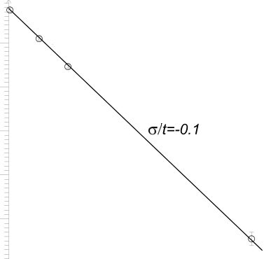
Fig 1. FIG. 1. Superfluid stiffness depletion as a function of x = (cT)3 for soft-core bosons in 2D with U/t = 4 (for system size L × L = 64 × 64). Solid (black) curve is the f(x) = A + Bx theoretical prediction with A = ns(T = t/6) and B fixed by the measured system parameters according to Eq. (3).
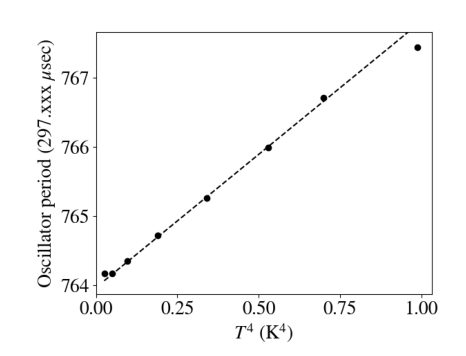
Fig 2. FIG. 2. Period of torsional oscillator as a function of T 4
Summary. This paper develops a new theory for how superfluid density decreases at low temperatures in systems where Galilean invariance is broken. It moves beyond the standard Landau theory by accounting for anharmonic terms in the hydrodynamic action. The results show a universal scaling law that links temperature-dependent properties to finite-size effects.
Why it may be interesting. It provides a universal framework for understanding how broken symmetries affect the thermodynamics of many-body systems, specifically relating temperature-driven depletion to finite-size effects in quantum fluids.
Detailed structure
**Main problem.** Generalizing the theory of low-temperature superfluid density depletion to systems where Galilean invariance is broken by factors like disorder, lattice potentials, or porous media.
**Main result.** The authors derive a general formula for the temperature dependence of superfluid stiffness that includes anharmonic terms, revealing a universal scaling of T^{d+1} and a connection between finite-temperature and finite-size effects.
**Method.** The study uses Popov's hydrodynamic action with anharmonic terms for theoretical derivation and validates the results using Worm algorithm Path-Integral Monte Carlo simulations of interacting lattice bosons.
**Model / system.** The theory applies to superfluids lacking Galilean symmetry, such as ultracold atoms in optical lattices, supersolids, and Helium-4 in porous media, modeled via an anharmonic hydrodynamic Hamiltonian.
**Key observables.** Superfluid stiffness/density depletion (delta n_s), sound velocity, compressibility, and density fluctuations.
**Important parameters / regimes.** Low-temperature regime, dimensionality (d), sound velocity (c), compressibility (kappa), and parameters nu, gamma, and sigma representing anharmonicity.
**Assumptions / limitations.** The theory assumes the low-temperature asymptotic regime where only the acoustic part of the phonon branch is excited.
**Paper structure.** The paper introduces the failure of Landau theory in non-Galilean systems, presents a new hydrodynamic theory based on Popov's action, provides numerical validation using PIMC simulations, and discusses universal scaling and experimental implications.
Abstract
Landau theory of superfluidity associates low-temperature flow of the normal component with the phonon wind. This picture does not apply to superfluids in which Galilean invariance is broken either by disorder, porous media, or lattice potential, and the phonon wind is no longer solely responsible for depletion of the superfluid component. Based on Popov's hydrodynamic action with anharmonic terms, we present a general theory for low-temperature ($T$) dependence of the superfluid stiffness, which reproduces Landau result as a special case when several parameters of the hydrodynamic action are fixed by Galilean invariance, and validate it with numerical simulations of interacting lattice bosons. In a broader context, our approach reveals universal low-temperature thermodynamics of superfluids with an intrinsic connection between finite-$T$ and finite-size ($L$) effects implying universal scaling, $T^{d+1}$ and $1/L^{d+1}$, respectively, for a large class of thermodynamic quantities. We discuss the experimental detection of this law, and compare our prediction to the existing literature.
Authors: Yusheng Niu, Hui Liu, Zhihao Xu Type: both · Category: disordered systems and neural networks · PDF:https://arxiv.org/pdf/2605.00543v1 Analysis basis: full PDF text, analyzed in chunks
Topic relevance:analog quantum simulation2/5
↔ Scroll figures horizontally
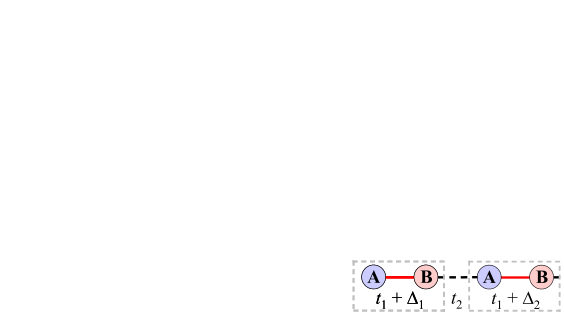
Fig 1. Figure 1: Schematic illustration of the SSH chain with quasiperiodically modulated intra- cell hopping ωj = t1 + ∆j and uniform intercell hopping t2.
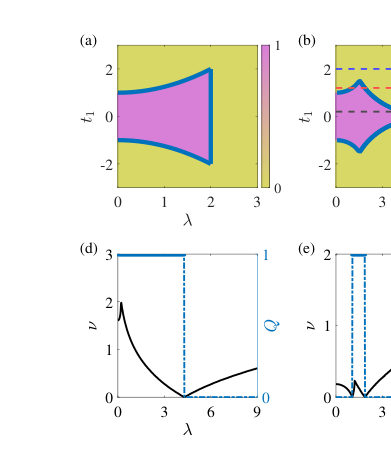
Fig 2. Figure 2: Topological phase diagrams and zero-mode inverse-localization-length analysis in the β →0 limit for odd n. The colored regions in (a)–(c) are obtained from the numerical topological indicator Q, while the solid lines denote the phase boundaries determined from the criterion ν = 0. The blue solid lines represent analytical phase boundaries, and the red solid lines denote the boundaries obtained from numerical integration of Eq. (7). (a) n = 1. (b) n = 3, where the horizontal dashed lines indicate t1 = 0.2, 1.2, and 2. (c) n = 5. (d) n = 3, t1 = 0.2. (e) n = 3, t1 = 1.2. (f) n = 3, t1 = 2. Here L = 1000.
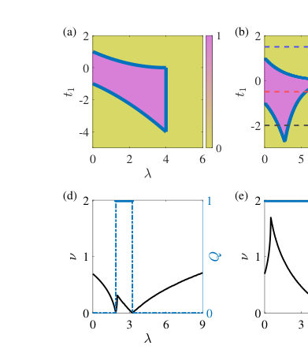
Fig 3. Figure 3: Topological phase diagrams and zero-mode inverse-localization-length analysis in the β →0 limit for even n. The colored regions in (a)–(c) are obtained from the numerical topological indicator Q, while the solid lines denote the phase boundaries determined from the criterion ν = 0. The blue solid lines represent analytical phase boundaries, and the red solid lines denote the boundaries obtained from numerical integration of Eq. (7). (a) n = 2. (b) n = 4, where the horizontal dashed lines indicate t1 = −2, −0.5, and 1.5. (c) n = 6. (d) n = 4, t1 = −2. (e) n = 4, t1 = −0.5. (f) n = 4, t1 = 1.5. Here L = 1000.Fig 4. Figure 4: Topological phase diagrams in the β →∞limit. The colored regions are obtained from the numerical topological indicator Q, and the blue solid lines denote the analytical phase boundaries determined by ν = 0. (a) Odd n. (b) Even n. Here L = 1000.
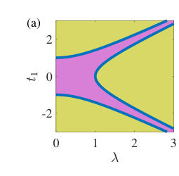
Fig 5. Figure 4(a) shows the phase diagram in the (t1, λ) plane for the odd-n case. The analytical boundaries from Eq. (15) are plotted as blue solid curves and agree well with the numerical results. In the interval |t1| > 1, the system exhibits a reentrant transition sequence: it is trivial at weak modulation, enters a TAI-like reentrant topological phase at intermediate λ, and returns to the trivial phase when λ is further increased. Compared with the β →0 limit, the topological region in the present case extends to progressively larger λ as |t1| increases, indicating that stronger modulation can still support a topological phase provided that the uniform hopping is tuned simultaneously. For...
Summary. This paper explores how the parity of a power-law exponent in quasiperiodic modulation controls the emergence of reentrant topological phases in an SSH chain. It reveals that odd and even exponents lead to fundamentally different topological phase diagrams. The findings are supported by both analytical theory and a proposed implementation using topoelectrical circuits.
Why it may be interesting. The discovery of a parity-dependent mechanism for inducing topological Anderson-like phases in quasiperiodic systems provides new insights into how controlled disorder can be used to engineer topological states.
Detailed structure
**Main problem.** The study investigates how power-law quasiperiodic modulation in a 1D SSH chain induces reentrant topological transitions and how the parity of the modulation exponent affects the phase diagram.
**Main result.** The authors demonstrate that the topological phase structure is parity-dependent: odd-power modulations can induce reentrant topology from the clean trivial regime, whereas even-power modulations only allow reentrance from the negative trivial regime. This effect is robust across the interpolation between smooth and square-wave-like modulation profiles.
**Method.** The study combines analytical calculations of the zero-mode inverse localization length with numerical evaluations of a real-space topological indicator and proposes an electrical-circuit implementation for experimental verification.
**Model / system.** A one-dimensional Su-Schrieffer-Heeger (SSH) chain with power-law quasiperiodically modulated intracell hopping, which can be realized via an AC electrical-circuit chain.
**Key observables.** Zero-mode inverse localization length (nu), real-space topological indicator (Q), node-voltage distribution, and two-point impedance.
**Important parameters / regimes.** Modulation strength (lambda), modulation exponent (n), modulation profile parameter (beta), and clean-limit intracell hopping (t1).
**Assumptions / limitations.** The study assumes the thermodynamic limit for analytical calculations and focuses on the chiral-symmetric regime.
**Figures summary.** Figure 5 shows phase diagrams in the (beta, lambda) plane for odd and even n; Figure 6 provides a schematic of the electrical-circuit implementation.
**Paper structure.** The paper introduces the modulated SSH model, presents analytical derivations for phase boundaries in specific limits, provides numerical phase diagrams and parity-dependent analysis, and concludes with a proposed experimental circuit implementation.
Abstract
We investigate reentrant topological transitions in a one-dimensional Su--Schrieffer--Heeger chain with power-law quasiperiodically modulated intracell hopping. The modulation is characterized by a positive integer exponent $n$ and a tunable parameter $β$, which continuously interpolates between the smooth power-law quasiperiodic limit and a sign-function limit that becomes square-wave-like for odd $n$ and uniform for even $n$. By combining analytical calculations of the zero-mode inverse localization length with numerical evaluations of a real-space topological indicator, we determine the topological phase diagrams in the $β\to 0$, $β\to\infty$, and finite-$β$ regimes. We show that deterministic quasiperiodic modulation can induce TAI-like reentrant topological phases within finite parameter windows. The formation of these phases depends crucially on the parity of $n$: for positive modulation strength, odd-power modulations can induce reentrant topology from the clean trivial regime $|t_1|>1$, whereas even-power modulations allow such reentrance only from the negative clean trivial regime $t_1<-1$. Exact analytical expressions for the zero-mode inverse localization length are obtained for $n=1,2,3,4$, yielding explicit or implicit transition conditions. The finite-$β$ results demonstrate that the parity-dependent structure remains robust throughout the interpolation between the two limiting cases. This parity effect originates from whether the modulation preserves or removes the sign structure of $\cos x$. We further propose an electrical-circuit implementation and discuss experimentally accessible signatures of the reentrant trivial--topological--trivial transition.
Authors: Cheng-Yun Ding, Li-Hua Zhang, Jian Zhou Type: theory · Category: quantum information and computing · PDF:https://arxiv.org/pdf/2605.00552v1 Analysis basis: full PDF text, analyzed in chunks
Topic relevance:correlated / nonlocal dissipation2/5
↔ Scroll figures horizontally
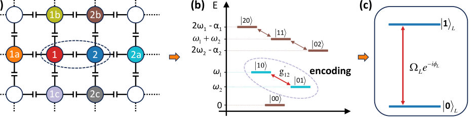
Fig 1. FIG. 1. Illustration of our superconducting implementation with DFS encoding. (a) Schematic of the 2D square transmon lattice via capacitive coupling. Transmons 1 and 2 are designated as target qubits, and surrounding devices (1a, 1b, 1c, 2a, 2b, 2c) act as spectator qubits, with different colors representing disparate resonant frequencies. (b) Energy-level spectrum of target qubits 1 and 2. The single-excitation transition subspace naturally forms a feasible DFS for single-logical-qubit encoding. (c) Encoded two-level logical basis structure corresponding to |10⟩= |0⟩L and |01⟩= |1⟩L, where resonant transitions can be flexibly tuned via the effective coupling strength ΩL.Fig 2. FIG. 2. Evolution trajectories for different geometric T gate schemes. (a)-(c) depict the trajectory strategies of the conventional two- segment orange-sliced shaped single-loop, standard composite n- loop, and our optimized composite n-loop schemes, corresponding to Path 1. (d)-(f) show the corresponding strategies for Path 2. For clarity, only up to three loops are illustrated, where p1 and p2 repre- sent the tunable degrees of freedom for parameter optimization.Fig 3. FIG. 3. Gate fidelities of the single-loop geometric T (GT) gate as a function of (a) Rabi, (b) detuning, and (c) crosstalk errors for Path 1 and Path 2, without decoherence. Panels (d)-(f) compare the noise robustness between the GT gate and the n-loop composite geometric T (CGT) gate (n = 2, 3) based on Path 1, covering Rabi, detuning, and crosstalk errors in sequence. Panels (g)-(i) present the corresponding comparisons for Path 2 under the same three noise channels.Fig 4. FIG. 4. Comparison of gate robustness between our optimized composite geometric T (OCGT) gate scheme with n = 2, 3 loops and the conventional GT gate scheme, under (a) Rabi, (b) detuning, and (c) crosstalk errors, respectively. Here, the selected path configurations (Path 1, Path 2) are the ones that is less sensitive to the corresponding errors.Fig 5. FIG. 5. Gate fidelities evaluated under decoherence and three dominant noise channels. For Rabi error, panels (a)-(c) correspond to the two- loop OCGT, single-loop GT, and DT schemes, respectively. Panels (d)-(f) and (g)-(i) present the analogous results for detuning and crosstalk errors, respectively.
Summary. The paper proposes a new method for creating robust logical T-gates in superconducting processors using a combination of geometric pulses and decoherence-free encoding. By optimizing the trajectory of the quantum gate, the researchers achieved high-order suppression of the most common errors in transmon systems. This approach offers a more resource-efficient alternative to traditional magic state distillation for fault-tolerant quantum computing.
Why it may be interesting. This work is highly relevant to open quantum systems and quantum optics researchers because it demonstrates advanced control techniques (composite pulses and geometric phases) to protect a logical qubit from specific environmental noise channels (collective dephasing and frequency drifts).
Detailed structure
**Main problem.** The difficulty of implementing high-fidelity, non-Clifford T-gates in superconducting circuits due to universal errors like Rabi frequency fluctuations, detuning, and residual ZZ crosstalk, as well as the high resource overhead of magic state distillation.
**Main result.** The proposed optimized multi-loop composite geometric T-gate (OCGT) achieves fourth-order suppression of Rabi, detuning, and crosstalk errors while providing inherent immunity to collective dephasing.
**Method.** The authors use nonadiabatic geometric quantum computing (NGQC) combined with a multi-loop optimized composite pulse engineering strategy and Decoherence-Free Subspace (DFS) encoding.
**Model / system.** A system of two capacitively coupled transmon qubits in a 2D square lattice, utilizing a parametrically tunable coupling model via ac microwave driving and DFS encoding in the single-excitation subspace.
**Key observables.** Gate fidelity, logical-state populations, and leakage error rates.
**Important parameters / regimes.** Rabi frequency error (epsilon), detuning error (delta), residual ZZ crosstalk (eta), and microwave modulation parameters (beta and Delta).
**Assumptions / limitations.** The model assumes a two-excitation subspace and focuses on specific noise channels, with potential leakage errors from high-frequency terms addressed via parameter optimization.
**Figures summary.** Fig 1 shows the physical transmon setup; Fig 2 illustrates the evolution trajectories for single-loop, conventional, and optimized multi-loop strategies; Fig 3 compares gate robustness against Rabi errors; Fig 6 shows fidelity landscapes and time-resolved dynamics; Fig 11 plots fidelity as a function of path parameters.
**Paper structure.** The paper identifies the T-gate bottleneck, proposes a hardware-efficient geometric approach using DFS, details the tunable transmon Hamiltonian, introduces a unified framework for gate construction, compares three trajectory strategies, and demonstrates numerical superiority in error suppression and leakage mitigation.
Abstract
High-fidelity logical \emph{T}-gate realization constitutes a core prerequisite for large-scale fault-tolerant quantum computing. However, conventional magic state distillation requires massive physical qubit overhead across successive distillation rounds, alongside sophisticated measurement and feedback control, thereby inducing considerable spatial and temporal resource consumption. Herein, we propose a controlled superconducting geometric logical \emph{T} gate scheme that achieves high-order suppression of universal errors, by integrating decoherence-free subspace encoding with multi-loop optimized composite geometric pulse engineering. Guided by tailored trajectory design, we systematically establish unified gate construction frameworks for conventional geometric, composite geometric, and optimized composite geometric protocols. By flexibly controling additional parametric degrees of freedom, the proposed scheme achieves substantially enhanced robustness against diverse noise sources. Numerical simulations reveal that, within tunable superconducting quantum circuits, our geometric logical \emph{T} gate outperforms both conventional composite geometric and dynamical gates in suppressing Rabi frequency, detuning, and residual inter-qubit crosstalk errors that can all be suppressed to the fourth order, while additionally providing inherent suppression of collective dephasing errors. The present strategy alleviates intrinsic limitations of mainstream approaches and opens a promising avenue toward robust high-fidelity logical \emph{T} gate construction.
Authors: Leonard Barboza Navarro, Maria Carolina Volpato, Alisson Ronieri Cadore, Pierre-Louis de Assis Type: theory · Category: quantum information and computing · PDF:https://arxiv.org/pdf/2605.00112v1 Analysis basis: full PDF text, analyzed in chunks
↔ Scroll figures horizontally
Fig 1. Figure 1: (a) Cross-sectional schematic of the DSLG integration on the RWG. The SiO2 buried oxide (BOX) layer is 2 µm thick, and the upper cladding is air. The core width and height were set to 800 nm and 400 nm, respectively. The gated region was set to approximately 2 µm, while the ungated regions were approximately 1 µm long. (b) Simulated —E— of the fundamental TE mode confined at 1.55 µm. (c) Simulation ∆neff and MPA for different hBN spacer thicknesses. The simulations were performed at λ = 1.55 µm and T = 300 K. A carrier mobility of µ = 10 000 cm2/Vs was assumed, corresponding to a relaxation time τ calculated at EF = 0.11 eV according to µ = eτv2 F/EF. The refractive index of hBN...Fig 2. Figure 2: (a) Cross-sectional schematic of the Si3N4 layer covering the DSLG integrated on the RWG. (b) Simulated —E— of the fundamental TE mode confined at 1.55 µm. (c) ∆neff and MPA for different values of the Si3N4 layer thickness. The simulations were performed under the same conditions as in Fig. 1(b-c), with 20 nm of HfO2. (d) Modal overlap per unit length for the gated and ungated regions. Both were evaluated at EF = 0.55 eV; however, the same behavior is observed throughout the entire range (0 eV to 1 eV). The overlap with the upper and lower graphene layers becomes nearly identical, as the region of highest optical field intensity also overlaps with the upper SLG. Inset: As the...Fig 3. Figure 3: (a) ∆neff and MPA for different graphene carrier mobility values: low mobility (∼1000 cm2/Vs), intermediate mobility (∼2500 cm2/Vs), and high mobility (∼10 000 cm2/Vs). The simulations are performed using the same design parameters and conditions as in Fig. 2. (b) Simulations at dif- ferent temperatures at 10 000 cm2/Vs. As the temperature decreases, the transition regime becomes sharper due to the reduced thermal broadening of the carrier distribution. Moreover, the onset of the transparency regime shifts toward lower EF. This enables access to operating regions where ∆neff spans both positive and negative values, which can be exploited to significantly reduce the device...Fig 4. Figure 4: (a) Equivalent electrical circuit of the DSLG-based waveguide phase modulator. (b) Frequency response of the DSLG-based waveguide phase modulator for different carrier mobility values (µ), assuming a contact re- sistance of Rc =150 Ωµm [25]. The graphene in the gated region (∼2 µm) is set to EF = 0.55 eV, while in the ungated region (∼1 µm) it is set to EF = 0.11 eV. Solid lines corresponds to 20 nm HfO2 spacer (ϵr = 20) with modulation length of 96 µm. Dashed lines correspond to 20 nm Al2O3 spacer (ϵr = 8) with a modulation length of 164 µm.Fig 5. Figure 6: Effective index of the fundamental TE and TM modes as a function of the waveguide core width for a fixed core height of 400 nm at λ = 1.55 µm.
Summary. The paper presents a theoretical optimization of graphene-based phase modulators for use in cryogenic quantum photonic circuits. It demonstrates that operating at 10 K significantly reduces device footprint and loss by leveraging the Pauli-blocking effect. The study identifies HfO2-based designs as a superior candidate for high-efficiency, low-loss modulation.
Why it may be interesting. This work is highly relevant to quantum optics and photonic quantum computing as it provides design guidelines for the hardware components (modulators) necessary for controlling photonic qubits in scalable, cryogenic-compatible integrated circuits.
Detailed structure
**Main problem.** Optimizing the performance of graphene-based electro-optic phase modulators for integrated photonic quantum information processing, specifically focusing on achieving low loss, high bandwidth, and compactness in cryogenic environments.
**Main result.** Cryogenic operation (10 K) enhances performance by sharpening the Fermi-Dirac distribution, enabling near-pure phase modulation with insertion losses below 0.3 dB and modulation lengths below 50 um.
**Method.** A combination of electromagnetic simulations using COMSOL Multiphysics and a physically consistent description of graphene conductivity based on the Kubo formalism.
**Model / system.** A dual-layer graphene (DSLG) capacitor integrated on silicon nitride (Si3N4) ridge waveguides, utilizing electrostatic tuning of the Fermi level to achieve the Pauli-blocking transparency regime.
**Key observables.** Effective refractive index (real and imaginary parts), phase shift, modal power attenuation (MPA), insertion loss, modulation efficiency (Vpi L), and 3-dB bandwidth.
**Important parameters / regimes.** Temperature (10 K to 300 K), graphene mobility, Fermi level (eV), dielectric spacer thickness and permittivity (HfO2 vs Al2O3), and waveguide dimensions.
**Assumptions / limitations.** Graphene is modeled as an infinitesimally thin conductive sheet with a fixed Fermi velocity; materials are assumed to be linear, isotropic, and non-magnetic.
**Figures summary.** Schematics of the DSLG architecture, cross-sectional views of the waveguide, effective index plots for TE/TM modes, frequency response comparisons, and equivalent electrical circuit diagrams.
**Paper structure.** The paper introduces the need for cryogenic modulators, describes the DSLG-Si3N4 platform and Kubo-based conductivity model, presents parametric studies on geometry and materials, analyzes temperature and mobility impacts, and concludes with performance comparisons to state-of-the-art technologies.
Abstract
Electro-optic modulators are key components for photonic quantum computing, particularly in fully cryovenic integrated platforms where low loss and compactness are critical. We present a systematic theoretical investigation of compact dual-layer graphene (DSLG) electro-optic phase modulators integrated on silicon nitride waveguides, with emphasis on cryogenic operation. By combining electromagnetic simulations with a physically consistent description of graphene conductivity based on the Kybo formalism, we analyze the interplay between electrostatic tuning, optical mode confinement, and material-dependent losses. We show that cryogenic operation enhances device performance by sharpening the Fermi-Dirac distribution, enabling access to the Pauli-blocking regime at lower Fermi levels and reducing the required modulation length. Through optimization of the waveguide geometry, dielectric spacer thickness and permittivity, and graphene quality, we identify regimes that simultaneously minimize insertion loss and device footprint under realistic voltage constraints. The optimized designs achieve near-pure phase modulation with insertion losses below 0.3 dB and modulation lengths below 50 um at 10 K, while maintaining GHz-scale bandwidths. These results provide quantitative design guidelines for low-loss, compact, cryogenic graphene phase modulators for scalable integrated quantum photonics.
Authors: Lucas Becerra, Monica Malen Denham, Alejandro B. Kolton, Karina Laneri Type: both · Category: disordered systems and neural networks · PDF:https://arxiv.org/pdf/2605.00167v1 Analysis basis: full PDF text, analyzed in chunks
↔ Scroll figures horizontally
Fig 1. Figure 1: Reference wildfire for the first experiment, simulated with D = 10 m2 h−1, A = 1 × 10−4, B = 15 m h−1, and ignition point at (x, y) = (400, 600). Each green area corresponds to a different fuel type (Forest A, Forest B, exotic forest, pasture, and shrubland), with spatially heterogeneous β and γ values listed in Table 1. Red indicates the final burned area (final state after 500 steps, dt = 0.5 h), yielding a burnt area of approximately 1015 ha; the star marks the ignition point; arrows indicate wind direction.Fig 2. Figure 2: Reference wildfire for the second experiment (Steffen-Martin landscape). The same reference values as the first experiment were used for (D = 10 m2 h−1, A = 1×10−4, B = 15 m h−1, and ignition point at (x, y) = (400, 600)), while homogeneous β and γ were introduced as additional tunable parameters with reference values (β = 1.5 h−1Fig 3. Figure 3: Reference wildfire used in Experiment 3 (Steffen-Martin landscape). The simula- tion uses D = 10 m2 h−1, A = 1×10−4, and B = 15 m h−1, with three fixed ignition points at (1130, 290), (1300, 150), and (620, 280). Each green area corresponds to a different fuel type (Forest A, Forest B, exotic forest, pasture, and shrubland), with heterogeneous and tunable βi and γi values (Table 1). Red indicates the final burned area (final state after 500 steps, dt = 0.5 h), yielding a burnt area of approximately 4241 ha; this reference fire was designed to burn a representative fraction of all fuel types.Fig 4. Figure 4: Evolution of the fitness in the three experiments. The dashed line shows the mean fitness per generation, while the solid line indicates the minimum fitness (best individual). Elitism ensures that the best individual is preserved across generations.Fig 5. Figure 5: Fitness landscape in relation to β and γ for the second case. It is shown that there is a valley of similar fitness values, which creates a strong correlation between both parameters and hinders their accurate estimation. The red point indicates the reference values (β, γ) = (1.5, 0.5).
Summary. This paper presents a hybrid computational method that uses machine learning to optimize a physics-based reaction-diffusion-convection model for predicting forest fires. By combining Genetic Algorithms with XGBoost, the researchers can efficiently estimate difficult-to-measure environmental parameters in complex, heterogeneous landscapes.
Why it may be interesting. not directly relevant
Detailed structure
**Main problem.** The difficulty of accurately predicting wildfire spread in Patagonia due to the lack of local parameters and the inadequacy of global models for heterogeneous landscapes.
**Main result.** A hybrid framework combining a Genetic Algorithm with XGBoost successfully recovers model parameters, with XGBoost significantly improving accuracy in low-dimensional scenarios.
**Method.** A hybrid approach using a Genetic Algorithm (GA) for global parameter search and an XGBoost surrogate model for fine-tuning and accelerating the optimization process.
**Model / system.** A Reaction-Diffusion-Convection (RDC) model, phenomenologically inspired by the SIR epidemic framework, applied to wildfire propagation across a heterogeneous landscape of different vegetation types.
**Key observables.** Spatial overlap between simulated and reference burned areas, fire front velocity, and fire front width.
**Important parameters / regimes.** Ignition rate (beta), extinction rate (gamma), diffusion constant (D), advection weights (A and B for wind and slope), and ignition coordinates (x, y).
**Assumptions / limitations.** The diffusion constant is assumed to be homogeneous; the wind field is assumed to be stationary; the model does not capture microscopic combustion physics.
**Figures summary.** Figure 1-3 show reference wildfire patterns for different experimental complexities; Figure 4 shows fitness evolution; Figure 5 shows a fitness valley in the beta-gamma landscape; Figure 6 shows parameter correlation; Figure 7 shows convergence of ignition coordinates; Figure 8 shows spatial difference maps.
**Paper structure.** Introduction to the wildfire problem, description of the RDC model and numerical implementation, presentation of the GA and XGBoost optimization framework, results from three experiments of increasing complexity, and discussion of limitations and future work.
Abstract
Wildfires are among the most severe disturbances affecting forest ecosystems, with over 50,000 hectares burned in Patagonia, Argentina, during 2025 alone. This study implements a Reaction-Diffusion-Convection (RDC) model to simulate wildfire spread in the Steffen and Martin Lakes area, a region severely impacted by fires. By integrating high-resolution maps of slope, wind velocity, and vegetation, we conducted three computational experiments of increasing complexity to simulate fire propagation across heterogeneous landscapes. We employed a Genetic Algorithm (GA) to recover reference model parameters by maximizing the spatial overlap between simulated and reference burned areas. Subsequently, parameter estimates were refined using XGBoost to improve accuracy. Results demonstrate that the GA accurately recovers reference parameters across all scenarios, while the XGBoost fine-tuning significantly enhances accuracy in simpler cases. This integrated framework offers a systematic approach for estimating difficult-to-measure wildfire parameters, demonstrating the potential of hybrid computational methods for wildfire modeling and forest management.
Authors: Emma Andrews, Prabhat Mishra Type: theory · Category: quantum information and computing · PDF:https://arxiv.org/pdf/2605.00107v1 Analysis basis: full PDF text, analyzed in chunks
↔ Scroll figures horizontally
Fig 1. Fig. 1: An overview of mutation testing.Fig 2. Fig. 2: Example of mutation operations. The CNOT gate between qubits q1 and q2 is removed with a remove gate operation. A new one-qubit gate is added with the add gate operation after the first Hadamard gate on qubit q4. The Pauli-X gate acting on qubit q2 is changed to a semantically equivalent one-qubit gate on the same qubit and in the same location with the change gate operation. The measurement of q2 is removed with the remove measurement operation. A new measurement is added at the end of the circuit on qubit q4 with the add measurement operation. Note that typically one mutation is performed to generate the mutant.Fig 3. Fig. 5: Typical structure of a quantum convolutional neural network (QCNN). It consists of a convolutional layer followed by a pooling layer. The next round of these pairs of layers reduces the number of qubits it operates over.Fig 4. Fig. 3: Components of a quantum neural network. The data is first embedded into the quantum circuit using a feature mapping. With the embedded data, the ansatz can process it, learning features and other relationships depending on the model objective. Finally, measurement of the quantum circuit produces the result of the model, such as a class label in classification tasks.Fig 5. Fig. 4: Example of two-qubit ZZ feature map. x[0] and x[1] are the values taken from the input data sample.
Summary. This paper introduces an efficient mutation testing framework specifically designed for Quantum Machine Learning models. By targeting the unique structural components of QNNs and QCNNs, the method reduces computational overhead and improves the detection of faults in quantum circuits.
Why it may be interesting. not directly relevant
Detailed structure
**Main problem.** Existing mutation testing for quantum circuits is too generalized and inefficient for Quantum Machine Learning (QML) models, leading to excessive redundant mutants and failure to detect application-specific faults.
**Main result.** The authors developed a directed mutation framework that significantly reduces mutant redundancy (up to 9.5x) while achieving higher mutation scores, particularly through targeted gate and layer modifications.
**Method.** The paper proposes seven new mutation operations (e.g., Ansatz Parameter Change, Layer Shuffling, and Gate Substitution) and a directed generation technique to target the structural components of QNNs and QCNNs.
**Model / system.** The study focuses on Quantum Neural Networks (QNNs) and Quantum Convolutional Neural Networks (QCNNs) using various feature maps (ZFM, ZZFM, Amplitude Embedding) and ansätze (RealAmplitudes, EfficientSU2).
**Key observables.** Mutation Score (ratio of killed to total mutants), Survival Rate, and Generation/Evaluation time.
**Important parameters / regimes.** Rotation gate parameters, input data features, and circuit depth (number of layers).
**Assumptions / limitations.** Assumes that breaking entanglement and symmetry in feature maps is a primary way to induce detectable faults; assumes the use of classical simulators (Qiskit-Aer) for evaluation.
**Figures summary.** Figure 1 shows the mutation workflow; Figure 2 illustrates standard mutation operations; Figure 3 and 4 detail QNN/feature map structures; Figure 5 shows QCNN architecture; Figure 7 presents the seven new mutation operations; Figure 8 uses t-SNE to visualize decision boundary changes.
**Paper structure.** The paper introduces the problem of QML verification, defines the structural components of QNNs, proposes seven new mutation operations, describes the experimental setup using various datasets and ansätze, and evaluates the efficiency and effectiveness of the new approach against existing methods.
Abstract
Quantum machine learning integrates the strengths of quantum computing and machine learning, enabling models to learn complex features using fewer parameters than their classical counterparts. Due to the increasing complexity of quantum machine learning models, it is necessary to verify that the implementation of these models satisfy the design specification and be free of bugs and faults. Mutation testing is a promising avenue to identify faulty quantum circuits that do not meet design specifications or contain defects by intentionally inserting faults into the quantum circuit. It is necessary to define mutation operations to inject faults into quantum circuits to ensure that a test suite is robust enough to evaluate an implementation against its design specification. In this paper, we extend mutation testing to quantum machine learning applications, primarily quantum neural network models. Specifically, this paper makes two important contributions. We define new mutation operations for efficient fault insertion compared to state-of-the-art approaches. We also present a directed mutation generation technique to reduce redundant mutant circuits. Extensive experimental evaluation demonstrates that our approach generates a more diverse and representative set of mutants, effectively addressing faults that traditional techniques fail to expose.
Authors: Hirotsugu Tagami, Takuya Kawada, Yuki Shiomi Type: experiment · Category: strongly correlated electrons · PDF:https://arxiv.org/pdf/2605.00491v1 Analysis basis: full PDF text, analyzed in chunks
↔ Scroll figures horizontally
Fig 1. FIG. 1. (a) Crystal structure of NCTO projected in the ab plane. Three Co ion sublattices: Co(1) (blue), Co(2) (green), and Co(3) (cyan). Co(2) and Co(3) are located at the center of the triangle formed by Co(1) (b) Zigzag chain of Co(1) (blue) along the c-axis. (c) Alternate arrangement of Co(2) (green) and Co(3) (cyan) along the c-axis. Co(3) site is partially replaced by Na ions (yellow). (d) Magnetic structure of the Co(1) triangle at low temperatures at zero field [10]. (e) Powder X-ray diffraction pattern of NCTO at room temperature. The red open circles represent the experimental data, and the blue lines represent the simulation results. The inset is a photograph of an NCTO single...Fig 2. FIG. 2. Magnetic field (H) dependence of (a),(c) magnetization (M) for an NCTO single crystal and (b),(d) longitudinal MR spectra of a Pt/NCTO bilayer at (a),(b) high temperatures (≥10 K) and (c),(d) low temperatures (≤5 K), respectively. The MR ratio is defined as MR = {ρ(H) −ρ(0)}/ρ(0), where ρ(H) is the resistivity at H. In all panels, H was applied parallel to the c-axis. Solid and dotted curves represent data obtained during field-decreasing (from 9 T to −9 T) and field-increasing (from −9 T to 9 T) scans, respectively.Fig 3. FIG. 3. Magnetic field (H) dependence of the MR ratio of Pt/NCTO (blue) and Cu/NCTO (red) at (a) 5 K and (b) 10 K. The MR ratio is determined by MR= {ρ(H) −ρ(0)}/ρ(0), where ρ(H) is the resistivity at H. The data for Pt/NCTO repeat the ones from Fig. 2 (b) and (d).Fig 4. FIG. 4. Temperature (T) dependence of the slope of MR spectra at high fields (µ0|H| ≥7 T) for Pt/NCTO (blue) and Cu/NCTO (red). The plotted data are the averaged results obtained from four field sweeps (9 →7 T, −7 →−9 T, −9 → −7 T, and 7 →9 T), where the sign of the negative field data is inverted. Error bars indicate the standard deviation in the linear fit.
Summary. The researchers investigated the origin of magnetoresistance anomalies in Pt/NCTO and Cu/NCTO heterostructures during magnetic spin-flip transitions. They found that the primary cause of the resistance jumps is strain induced by magnetostriction, though interface spin accumulation contributes to the high-field behavior. This work provides a method for the electrical detection of magnetic transitions in Ising-type antiferromagnets.
Why it may be interesting. not directly relevant
Detailed structure
**Main problem.** Determining whether magnetoresistance (MR) anomalies at spin-flip transitions in metal/magnetic insulator heterostructures are driven by interface spin accumulation or by magnetostriction-induced strain.
**Main result.** The MR anomalies at the spin-flip transition are attributed to magnetostriction-induced strain, while the high-field MR behavior is driven by the interaction between interface spin accumulation and induced magnetization.
**Method.** Longitudinal MR measurements and SQUID magnetometry were performed on Pt and Cu thin films deposited on Na5Co15.5Te6O36 (NCTO) single crystals.
**Model / system.** The system consists of Pt and Cu thin films (8.3 nm) on a single-crystal Ising-type antiferromagnetic insulator, Na5Co15.5Te6O36 (NCTO), which features Co ion sublattices and undergoes transitions to partially disordered antiferromagnetic states.
**Key observables.** Longitudinal magnetoresistance (MR), magnetization (M), magnetic susceptibility (chi), and magnetostriction coefficient (lambda).
**Important parameters / regimes.** Neel temperature (TN approx 50 K), transition to frozen PDA state (approx 20 K), and magnetic field strength (up to 9 T).
**Assumptions / limitations.** The study assumes that the similarity in MR jumps between Pt and Cu (which have different spin-orbit interactions) implies a strain-based mechanism for the spin-flip transition anomalies.
**Figures summary.** Figure 1 shows the crystal structure of NCTO, including the Co(1) triangular networks and zigzag patterns.
**Paper structure.** The paper introduces the heterostructure and the scientific problem, describes the experimental setup and material properties, presents MR and magnetization results, analyzes the physical mechanisms (strain vs. spin-current), and concludes with implications for antiferromagnetic spintronics.
Abstract
We report on the longitudinal magnetoresistance (MR) in thin metal films on an Ising-type antiferromagnetic insulator, Na5Co15.5Te6O36 (NCTO). Steep changes in the MR spectra with hysteresis were observed at spin-flip transitions driven by magnetic fields applied along the easy axis of the NCTO crystal. The MR jumps almost follow step-like changes in magnetization at the spin-flip transition. At very low temperatures where Co moments are partially frozen, the MR anomalies exhibit a tunnel-magnetoresistance-like shape. The observed MR anomalies at the spin-flip transition are attributed to strain effects via magnetostriction upon the magnetic-structure change of the Co nets in NCTO, because similar MR jumps are observed in both Pt/NCTO and Cu/NCTO. Interestingly, we found that the high-field slopes of the MR spectra show opposite signs between Pt/NCTO and Cu/NCTO at low temperatures. Because the opposite signs of the high-field MR are prominent below the antiferromagnetic transition temperature of NCTO, the interaction between the interface spin accumulation and magnetization is likely to contribute to the MR effect in the induced ferromagnetic state.
Authors: Massimo Boninsegni Type: theory · Category: statistical mechanics · PDF:https://arxiv.org/pdf/2605.00629v1 Analysis basis: full PDF text, analyzed in chunks
↔ Scroll figures horizontally
Fig 1. Figure 1: Time step extrapolation of the kinetic energy per particle in bulk superfluid 4He, at temperature T = 1 K, for a system comprising N = 2048 atoms. The density is 0.021834 ˚A−3. The results are obtained with the Aziz I pair potential. The dashed line is a quartic fit to the data. Arrow points to the value of τ for which convergence is reached, within statistical uncertainty. The value of the kinetic energy extrapolated to the τ = 0 limit is 14.133(5) K.Fig 2. Figure 2: One-body density matrix in superfluid 4He at the same thermodynamic conditions of Fig. 1, with the two different values of the time step of Table 1. Statistical errors are of the order of the size of the symbols. The dashed line corresponds to the value 0.0705, which is consistent with the averages of the two sets of data.Fig 3. Figure 3: Theoretically computed pair correlation function (left) and static structure factor (right) for superfluid 4He at temperature T = 1 K, at saturated vapor pressure. The pair correlation function was computed using the Aziz I pair potential, whereas static structure factor was computed using both the Aziz I and Lennard-Jones potentials.Fig 4. Figure 4: One-body density matrix n(r) computed by QMC at temperature T = 0.5 K, at saturated vapor pressure, on a system comprising N = 2048 atoms. The value of the condensate fraction is obtained by averaging over the values in the shaded area.Fig 5. Figure 5: One-body density matrix n(r) computed by QMC at temperature T = 2.12 K, at saturated vapor pressure, on a system comprising N = 2048 atoms. Solid line corresponds to the value 0.022. Error bars are smaller than the size of the symbols.
Summary. This paper presents a large-scale Quantum Monte Carlo study of superfluid 4He using 2,048 atoms to achieve much higher precision than previous studies. It provides updated values for the ground-state condensate fraction and energy, effectively benchmarking modern simulation techniques against experimental data.
Why it may be interesting. not directly relevant
Detailed structure
**Main problem.** The study aims to provide updated, high-precision numerical estimates for the superfluid phase of 4He, addressing inaccuracies and small system sizes in legacy simulations.
**Main result.** The paper provides a revised ground-state condensate fraction of 0.0715 +/- 0.0006, which is lower than previous QMC estimates but consistent with experiment, and establishes a new benchmark for energetic and structural properties.
**Method.** State-of-the-art Quantum Monte Carlo (QMC) simulations using the canonical version of the continuous-space Worm Algorithm (WA).
**Model / system.** A system of 2,048 identical, spin-zero, point-like helium-4 atoms at saturated vapor pressure, modeled using the Aziz I and Aziz II interatomic potentials.
**Key observables.** Kinetic and potential energy, superfluid fraction, condensate fraction, pair correlation function, static structure factor, and one-particle density matrix.
**Important parameters / regimes.** Temperature range (0.25 K to 2 K), fixed equilibrium density, and imaginary time step (tau) for extrapolation.
**Assumptions / limitations.** Uses the Born-Oppenheimer approximation and treats the atoms as non-relativistic particles with pairwise-decomposed potential energy.
**Figures summary.** Figure 1 shows time-step extrapolation for kinetic energy; Figure 2 compares the one-particle density matrix at different time steps; Figure 3 compares structural properties across different potentials; Figure 4 and 5 illustrate the behavior of the one-body density matrix near the transition temperature.
**Paper structure.** The paper identifies limitations in previous studies, describes the Worm Algorithm methodology and time-step convergence, presents updated energetic and structural results, analyzes the temperature dependence of the condensate fraction, and concludes with a comparison of different interatomic potentials.
Abstract
Detailed numerical results obtained with state-of-the-art Quantum Monte Carlo (QMC) simulations are presented for the superfluid phase of $^4$He at saturated vapor pressure. The aim of this contribution is that of providing reliable, up-to-date estimates for this archetypal superfluid, reflecting the methodological progress that has taken place over the past two decades. We simulate a system comprising 2,048 helium atoms, i.e., an order of magnitude greater in size than those for which results currently regarded as standard references were originally obtained. We offer revised estimates for energetic and structural properties, as well as for the ground state condensate fraction.